全文翻译
摘要
扩散概率模型（DPMs）是新兴的强大生成模型。尽管DPMs具有高质量的生成性能，但它们的采样速度仍然较慢，因为通常需要对大型神经网络进行数百或数千次的顺序函数评估（步骤）才能生成一个样本。从DPMs中采样可以看作是求解相应的扩散常微分方程（ODEs）。在这项工作中，我们提出了扩散ODEs解的精确公式。该公式通过解析计算解的线性部分，而不是像以往工作那样将所有项都留给黑箱ODE求解器处理。通过变量变换，解可以等效简化为神经网络的指数加权积分。基于我们的公式，我们提出了DPM-Solver，这是一种快速的、具有收敛阶保证的专用高阶扩散ODE求解器。DPM-Solver适用于离散时间和连续时间的DPMs，且无需任何额外训练。实验结果表明，DPM-Solver在各种数据集上仅需10 - 20次函数评估就能生成高质量样本。在CIFAR10数据集上，我们在10次函数评估中达到了4.70的FID（Frechet Inception Distance），在20次函数评估中达到了2.87的FID，并且与之前最先进的无训练采样器相比，在各种数据集上实现了4 - 16倍的加速。
2 扩散概率模型
在本节中，我们将回顾扩散概率模型及其相关的微分方程。
2.1 正向过程和扩散随机微分方程
假设我们有一个$D$维随机变量$x_{0} \in \mathbb{R}^{D}$，其分布$q_{0}(x_{0})$未知。扩散概率模型（DPMs）[1-3,10]定义了一个从$x_{0}$开始的正向过程$\{x_{t}\}_{t \in[0, T]}$（$T>0$），使得对于任意$t \in[0, T]$，在给定$x_{0}$的条件下，$x_{t}$的分布满足：
其中$\alpha(t)$、$\sigma(t) \in \mathbb{R}^{+}$是关于$t$的可微函数，且导数有界，为简化表示，我们将它们记为$\alpha_{t}$、$\sigma_{t}$。$\alpha_{t}$和$\sigma_{t}$的选择被称为DPM的噪声调度。令$q_{t}(x_{t})$表示$x_{t}$的边际分布，DPMs通过选择噪声调度，确保对于某个$\bar{\sigma}>0$，有$q_{T}(x_{T}) \approx \mathcal{N}(x_{T} | 0, \tilde{\sigma}^{2} I)$，并且信噪比（SNR）$\alpha_{t}^{2} / \sigma_{t}^{2}$随$t$严格递减[10]。此外，Kingma等人[10]证明，对于任意$t \in[0, T]$，以下随机微分方程（SDE）与公式（2.1）具有相同的转移分布$q_{0 t}(x_{t} | x_{0})$：
其中$w_{t} \in \mathbb{R}^{D}$是标准维纳过程，并且
在一些正则条件下，Song等人[3]表明，公式（2.2）中的正向过程存在一个从时间$T$到$0$的等效反向过程，从边际分布$q_{T}(x_{T})$开始：
其中$\overline{w}_{t}$是反向时间的标准维纳过程。公式（2.4）中唯一未知的项是每个时间$t$的得分函数$\nabla_{x} \log q_{t}(x_{t})$。在实践中，DPMs使用由$\theta$参数化的神经网络$\epsilon_{\theta}(x_{t}, t)$来估计缩放后的得分函数：$-\sigma_{t} \nabla_{x} \log q_{t}(x_{t})$ 。通过最小化以下目标来优化参数$\theta$[2,3]：
其中$\omega(t)$是一个加权函数，$\epsilon \sim q(\epsilon)=\mathcal{N}(\epsilon | 0, I)$，$x_{t}=\alpha_{t} x_{0}+\sigma_{t} \epsilon$，$C$是一个与$\theta$无关的常数。由于$\epsilon_{\theta}(x_{t}, t)$也可以被视为预测添加到$x_{t}$的高斯噪声，所以它通常被称为噪声预测模型。由于$\epsilon_{\theta}(x_{t}, t)$的真实值是$-\sigma_{t} \nabla_{x} \log q_{t}(x_{t})$，DPMs用$-\epsilon_{\theta}(x_{t}, t)/\sigma_{t}$替换公式（2.4）中的得分函数，并定义了一个从时间$T$到$0$的参数化反向过程（扩散SDE），从$x_{T} \sim \mathcal{N}(0, \tilde{\sigma}^{2} I)$开始：
可以使用数值求解器求解公式（2.5）中的扩散SDE来从DPMs生成样本，该数值求解器将SDE从$T$离散到$0$ 。Song等人[3]证明，DPMs传统的祖传采样方法[2]可以看作是公式（2.5）的一阶SDE求解器。然而，这些一阶方法通常需要数百或数千次函数评估才能收敛[3]，导致采样速度极慢。
2.2 扩散（概率流）常微分方程
在离散化SDE时，步长受到维纳过程随机性的限制[27，第11章]。较大的步长（较少的步数）通常会导致不收敛，尤其是在高维空间中。为了实现更快的采样，可以考虑相关的概率流ODE[3]，它在每个时间$t$的边际分布与SDE相同。具体来说，对于DPMs，Song等人[3]证明了公式（2.4）的概率流ODE为：
其中$x_{t}$的边际分布也是$q_{t}(x_{t})$ 。通过用噪声预测模型替换得分函数，Song等人[3]定义了以下参数化ODE（扩散ODE）：
可以通过从$T$到$0$求解该ODE来生成样本。与SDE相比，ODE可以使用更大的步长求解，因为它们没有随机性。此外，我们可以利用高效的数值ODE求解器来加速采样。Song等人[3]使用RK45 ODE求解器[28]求解扩散ODE，在CIFAR-10数据集[29]上，该方法通过约60次函数评估生成的样本质量，可与公式（2.5）的1000步SDE求解器相媲美。然而，现有的通用ODE求解器仍然无法在少步（约10步）采样中生成令人满意的样本。据我们所知，目前仍然缺乏适用于少步采样的无训练DPM采样器，DPM的采样速度仍然是一个关键问题。
3 扩散常微分方程的定制快速求解器
如2.2节所述，在高维情况下离散化随机微分方程（SDEs）通常很困难[27，第11章]，且很难在几步内收敛。相比之下，常微分方程（ODEs）更容易求解，这为快速采样器提供了潜力。然而，正如2.2节提到的，先前工作[3]中使用的通用黑箱ODE求解器在经验上无法在几步内收敛。这促使我们设计一种专门用于扩散ODEs的求解器，以实现快速且高质量的少步采样。我们从详细研究扩散ODEs的具体结构开始。
3.1 扩散常微分方程精确解的简化公式
这项工作的关键见解是，给定时间$s>0$时的初始值$x_{s}$，式（2.7）中扩散ODEs在每个时间$t<s$的解$x_{t}$可以简化为一个非常特殊的精确公式，并且可以有效地进行近似。
我们的第一个关键观察结果是：考虑到扩散ODEs的特殊结构，解$x_{t}$的一部分可以精确计算。式（2.7）中扩散ODEs的右侧由两部分组成：$f(t)x_{t}$这部分是$x_{t}$的线性函数，而另一部分$\frac{g^{2}(t)}{2\sigma_{t}}\epsilon_{\theta}(x_{t},t)$由于神经网络$\epsilon_{\theta}(x_{t},t)$的存在，通常是$x_{t}$的非线性函数。这种类型的ODE被称为半线性ODE。先前工作[3]采用的黑箱ODE求解器忽略了这种半线性结构，因为它们将式（2.7）中的整个$h_{\theta}(x_{t},t)$作为输入，这导致了线性项和非线性项的离散化误差。我们注意到，对于半线性ODEs，时间$t$的解可以通过“常数变易”公式[30]精确表示为：
这个公式将线性部分和非线性部分解耦。与黑箱ODE求解器不同，现在线性部分被精确计算，消除了线性项的近似误差。然而，非线性部分的积分仍然很复杂，因为它将与噪声调度相关的系数（即$f(\tau)$、$g(\tau)$等）和复杂的神经网络$\epsilon_{\theta}$耦合在一起，仍然难以近似。
我们的第二个关键观察结果是：通过引入一个特殊变量，非线性部分的积分可以大大简化。令$\lambda_{t}:=\log (\alpha_{t} / \sigma_{t})$（即对数信噪比的一半），那么$\lambda_{t}$是$t$的严格递减函数（根据2.1节中对DPMs的定义）。我们可以将式（2.3）中的$g(t)$重写为：
结合式（2.3）中的$f(t)=d \log \alpha_{t} / d t$，我们可以将式（3.1）重写为：
由于$\lambda(t)=\lambda_{t}$是$t$的严格递减函数，它有一个反函数$t_{\lambda}(\cdot)$，满足$t=t_{\lambda}(\lambda(t))$。我们进一步将$x$和$\epsilon_{\theta}$的下标从$t$改为$\lambda$，并表示$\hat{x}_{\lambda}:=x_{t_{\lambda}(\lambda)}$，$\hat{\epsilon}_{\theta}(\hat{x}_{\lambda}, \lambda):=\epsilon_{\theta}(x_{t_{\lambda}(\lambda)}, t_{\lambda}(\lambda))$。通过对$\lambda$进行 “变量变换” 重写式（3.3），我们得到：
命题3.1（扩散ODEs的精确解）：给定时间$s>0$时的初始值$x_{s}$，式（2.7）中扩散ODEs在时间$t \in[0, s]$的解$x_{t}$为：
我们将积分$\int e^{-\lambda} \hat{\epsilon}_{\theta}(\hat{x}_{\lambda}, \lambda) d \lambda$称为$\hat{\epsilon}_{\theta}$的指数加权积分，它非常特殊，并且与ODE求解器文献中的指数积分器[25]密切相关。据我们所知，在扩散模型的先前工作中尚未揭示这种公式。
式（3.4）为近似扩散ODEs的解提供了新的视角。具体来说，给定时间$s$的$x_{s}$，根据式（3.4），近似时间$t$的解等同于直接近似从$\lambda_{s}$到$\lambda_{t}$的$\hat{\epsilon}_{\theta}$的指数加权积分，这避免了线性项的误差，并且在指数积分器的文献[25, 31]中已有深入研究。基于这一见解，我们提出了用于扩散ODEs的快速求解器，详见以下章节。
3.2 扩散常微分方程的高阶求解器
在本节中，我们利用所提出的解公式（3.4），提出了具有收敛阶保证的扩散ODEs高阶求解器。所提出的求解器和分析受到ODE文献中指数积分器方法[25, 31]的启发。
具体来说，给定时间$T$的初始值$x_{T}$和从$t_{0}=T$到$t_{M}=0$递减的$M + 1$个时间步$\{t_{i}\}_{i = 0}^{M}$。令$\tilde{x}_{t_{0}} = x_{T}$为初始值。所提出的求解器使用$M$步迭代计算序列$\{\tilde{x}_{t_{i}}\}_{i = 0}^{M}$，以近似时间步$\{t_{i}\}_{i = 0}^{M}$的真实解。特别地，最后一次迭代$\tilde{x}_{t_{M}}$近似时间$0$的真实解。
为了减少$\tilde{x}_{t_{M}}$与时间$0$真实解之间的近似误差，我们需要在每一步减少$\tilde{x}_{t_{i}}$的近似误差[30]。从时间$t_{i - 1}$的先前值$\tilde{x}_{t_{i - 1}}$开始，根据式（3.4），时间$t_{i}$的精确解$x_{t_{i - 1} \to t_{i}}$为：
因此，为了计算用于近似$x_{t_{i - 1} \to t_{i}}$的$\tilde{x}_{t_{i}}$值，我们需要近似从$\lambda_{t_{i - 1}}$到$\lambda_{t_{i}}$的$\hat{\epsilon}_{\theta}$的指数加权积分。记$h_{i}:=\lambda_{t_{i}}-\lambda_{t_{i - 1}}$，$\hat{\epsilon}_{\theta}^{(n)}(\hat{x}_{\lambda}, \lambda):=\frac{d^{n} \hat{\epsilon}_{\theta}(\hat{x}_{\lambda}, \lambda)}{d \lambda^{n}}$为$\hat{\epsilon}_{\theta}(\hat{x}_{\lambda}, \lambda)$关于$\lambda$的$n$阶全导数。对于$k \geq 1$，$\hat{\epsilon}_{\theta}(\hat{x}_{\lambda}, \lambda)$在$\lambda_{t_{i - 1}}$处关于$\lambda$的$(k - 1)$阶泰勒展开式为：
将上述泰勒展开式代入式（3.5），得到：
其中积分$\int e^{-\lambda} \frac{(\lambda-\lambda_{t_{i - 1}})^{n}}{n!} d \lambda$可以通过反复应用$n$次分部积分法进行解析计算（见附录B.2）。因此，为了近似$x_{t_{i - 1} \to t_{i}}$，我们只需要近似$n \leq k - 1$时的$n$阶全导数$\hat{\epsilon}_{\theta}^{(n)}(\hat{x}_{\lambda}, \lambda)$，这在ODE文献[31, 32]中是一个研究得较为充分的问题。通过舍弃$O(h_{i}^{k + 1})$误差项，并使用 “刚性阶条件” [31, 32]近似前$(k - 1)$阶全导数，我们可以推导出用于扩散ODEs的$k$阶ODE求解器。我们将这类求解器统称为DPM-Solver，对于特定的阶数$k$，则称为DPM-Solver-$k$。这里我们以$k = 1$为例进行说明。在这种情况下，式（3.6）变为：
通过舍弃高阶误差项$O(h_{i}^{2})$，我们可以得到$x_{t_{i - 1} \to t_{i}}$的近似值。由于这里$k = 1$，我们将这个求解器称为DPM-Solver-1，详细算法如下：
DPM-Solver-1：给定初始值$x_{T}$和从$t_{0}=T$到$t_{M}=0$递减的$M + 1$个时间步$\{t_{i}\}_{i = 0}^{M}$。从$\tilde{x}_{t_{0}} = x_{T}$开始，序列$\{\tilde{x}_{t_{i}}\}_{i = 1}^{M}$通过以下方式迭代计算：
对于$k \geq 2$，近似泰勒展开式的前$k$项需要在$t$和$s$之间设置额外的中间点[31]。推导过程更具技术性，因此我们将其推迟到附录B。下面我们提出$k = 2, 3$的算法，并分别将它们命名为DPM-Solver-2和DPM-Solver-3。
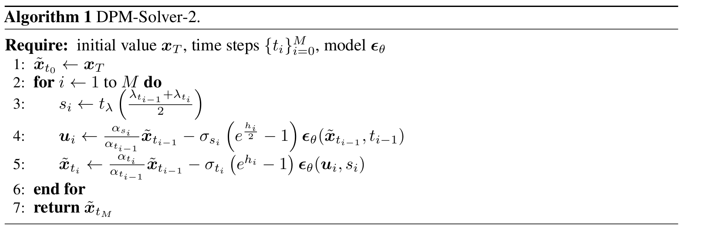
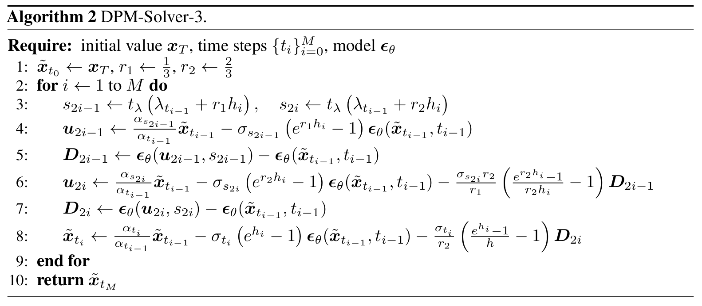
在这里，$t_{\lambda}(\cdot)$ 是 $\lambda(t)$ 的反函数，对于文献[2, 16]中使用的实际噪声调度，它有一个解析表达式，如附录D所示。对于二阶龙格 - 库塔扩散概率模型求解器（DPM - Solver - 2），选择的中间点是 $(s_{i}, u_{i})$ ，对于三阶龙格 - 库塔扩散概率模型求解器（DPM - Solver - 3），选择的中间点是 $(s_{2i - 1}, u_{2i - 1})$ 和 $(s_{2i}, u_{2i})$ 。如算法中所示，对于 $k = 1, 2, 3$，DPM - Solver - $k$ 每一步需要 $k$ 次函数求值。尽管高阶求解器（$k = 2, 3$）的每一步计算成本更高，但由于它们的收敛阶更高，达到收敛所需的步数要少得多，所以通常效率更高。我们证明了 DPM - Solver - $k$ 是 $k$ 阶求解器，如以下定理所述。证明见附录B。
定理3.2（DPM - Solver - $k$ 作为 $k$ 阶求解器） 假设 $\epsilon_{\theta}(x_{t}, t)$ 满足附录B.1中详细说明的正则条件，那么对于 $k = 1, 2, 3$ ，DPM - Solver - $k$ 是扩散常微分方程（ODE）的 $k$ 阶求解器，也就是说，对于由DPM - Solver - $k$ 计算得到的序列 $\{\tilde{x}_{t_{i}}\}_{i = 1}^{M}$ ，在时间 $t = 0$ 处的近似误差满足 $\tilde{x}_{t_{M}} - x_{0} = \mathcal{O}(h_{max}^{k})$ ，其中 $h_{max} = \max_{1\leq i\leq M}(\lambda_{t_{i}} - \lambda_{t_{i - 1}})$ 。
最后，如先前关于指数积分器的文献[31, 32]所示，$k\geq4$ 的求解器需要更多的中间点。因此，在这项工作中我们仅考虑 $k$ 从1到3 的情况，而将更高 $k$ 值的求解器留待未来研究。
3.3 步长调度
3.2节中提出的求解器需要预先指定时间步${t_{i}}_{i = 0}^{M}$。我们提出了两种步长调度的选择。一种是手动设定的，即均匀划分区间$[\lambda_{T}, \lambda_{0}]$，也就是$\lambda_{t_{i}} = \lambda_{T} + \frac{i}{M}(\lambda_{0} - \lambda_{T})$，其中$i = 0, \ldots, M$。需要注意的是，这与之前的工作[2, 3]不同，之前的工作是对$t_{i}$选择均匀的时间步。从经验上看，采用均匀时间步长$\lambda_{t_{i}}$的DPM-Solver已经能够在几步内生成相当不错的样本，附录E中列出了相关结果。作为另一种选择，我们提出了一种自适应步长算法，通过结合不同阶数的DPM-Solver来动态调整步长。这种自适应算法的灵感来自于[20]，我们将其实现细节放在附录C中。
对于少步采样，我们需要充分利用所有的函数评估次数（NFE）。当NFE不能被3整除时，我们首先尽可能多地应用DPM-Solver-3，然后根据NFE除以3的余数，添加单步的DPM-Solver-1或DPM-Solver-2（具体取决于余数），附录D中有详细说明。在后续实验中，对于NFE ≤ 20的情况，我们使用这种结合均匀步长调度的求解器组合；对于其他情况，则使用自适应步长调度。
3.4 从离散时间扩散概率模型采样
离散时间扩散概率模型（DPMs）[2]在$N$个固定时间步${t_{n}}_{n = 1}^{N}$训练噪声预测模型，噪声预测模型由$\tilde{\epsilon}_{\theta}(x_{n}, n)$参数化，其中$n = 0, \ldots, N - 1$，每个$x_{n}$对应于时间$t_{n + 1}$的值。我们可以通过令$\epsilon_{\theta}(x, t):=\tilde{\epsilon}_{\theta}(x, \frac{(N - 1)t}{T})$，将离散时间噪声预测模型转换为连续版本，其中$x \in \mathbb{R}^{d}$，$t \in [0, T]$。注意，$\tilde{\epsilon}_{\theta}$的输入时间可能不是整数，但我们发现噪声预测模型仍然能够很好地工作，我们推测这是因为平滑的时间嵌入（例如位置嵌入[2]）。通过这种重新参数化，噪声预测模型可以采用连续时间步作为输入，因此我们也可以使用DPM-Solver进行快速采样。
4 与现有快速采样方法的比较
在此，我们探讨DPM-Solver与现有的基于ODE的DPM快速采样方法之间的关系，并突出它们的差异。我们还将简要讨论无训练采样器相较于有训练采样器的优势。
4.1 作为DPM-Solver-1的DDIM
去噪扩散隐式模型（DDIM）[19]设计了一种用于从DPM快速采样的确定性方法。对于两个相邻的时间步$t_{i - 1}$和$t_{i}$，假设在时间$t_{i - 1}$我们有一个解$\tilde{x}_{t_{i - 1}}$，那么从时间$t_{i - 1}$到$t_{i}$的DDIM单步更新为：
尽管动机完全不同，但我们发现DPM-Solver-1和去噪扩散隐式模型（DDIM）[19]的更新是相同的。根据$\lambda$的定义，我们有$\frac{\sigma_{t_{i - 1}}}{\alpha_{t_{i - 1}}}=e^{-\lambda_{t_{i - 1}}}$和$\frac{\sigma_{t_{i}}}{\alpha_{t_{i}}}=e^{-\lambda_{t_{i}}}$。将这些以及$h_{i}=\lambda_{t_{i}}-\lambda_{t_{i - 1}}$代入公式（4.1），得到的结果与公式（3.7）中DPM-Solver-1的一步更新完全一致。然而，DPM-Solver的半线性ODE公式允许有原则地推广到高阶求解器，并进行收敛阶分析。
最近的工作[13]也表明，通过对公式（4.1）两边求导，DDIM是扩散ODE的一阶离散化。然而，他们无法解释DDIM与扩散ODE的一阶欧拉离散化之间的差异。相比之下，通过证明DDIM是DPM-Solver的一个特殊情况，我们揭示了DDIM充分利用了扩散ODE的半线性，这解释了它相较于传统欧拉方法的优越性。
4.2 与传统龙格 - 库塔方法的比较
通过将传统的显式龙格 - 库塔（RK）方法直接应用于公式（2.7）中的扩散ODE，可以得到一个高阶求解器。具体来说，RK方法将公式（2.7）的解写成以下积分形式：
并在$[t, s]$之间使用一些中间时间步，结合$h_{\theta}$在这些时间步的评估值来近似整个积分。显式RK方法的近似误差取决于$h_{\theta}$，它包含了与线性项$f(\tau) x_{\tau}$和非线性噪声预测模型$\epsilon_{\theta}$相对应的误差。然而，由于线性项的精确解具有指数系数（如公式（3.1）所示），线性项的误差可能会呈指数增长。有许多经验证据[25, 31]表明，对于半线性ODEs，直接使用显式RK方法在大步长情况下可能会遇到数值不稳定问题。我们在5.1节中也展示了所提出的DPM-Solver与传统显式RK方法在经验上的差异，结果表明在相同阶数下，DPM-Solver的离散化误差比RK方法更小。
4.3 基于训练的DPM快速采样方法
需要额外训练或优化的采样器包括知识蒸馏[13, 14]、学习噪声水平或方差[15, 16, 33]以及学习噪声调度或样本轨迹[17, 18]。尽管渐进蒸馏方法[13]可以在4步内获得快速采样器，但它需要额外的训练成本，并且会丢失原始DPM中的部分信息（例如，蒸馏后，噪声预测模型无法预测$[0, T]$之间每个时间步的噪声（得分函数））。相比之下，无训练采样器可以保留原始模型的所有信息，从而可以通过将原始模型与外部分类器结合直接扩展到条件采样（例如，见附录D中带分类器引导的条件采样）。
除了直接为DPM设计快速采样器外，一些工作还提出了新型的DPM，以支持更快的采样。例如，为DPM定义低维潜在变量[34]；设计具有有界得分函数的特殊扩散过程[35]；将GAN与DPM的反向过程相结合[36]。所提出的DPM-Solver也可能适用于加速这些DPM的采样，我们将其留作未来的工作。
5 实验
在本节中，我们展示了作为一种无需训练的采样器，DPM - Solver（扩散概率模型求解器）能够显著加快现有预训练扩散概率模型（DPMs）的采样速度，这些模型既包括连续时间的，也包括离散时间的，并且涵盖了线性噪声调度[2, 19]和余弦噪声调度[16]。我们改变函数评估次数（NFE，即对噪声预测模型$\epsilon_{\theta}(x_{t}, t)$ 的调用次数），并比较DPM - Solver与其他方法生成样本的质量。在每个实验中，我们生成50000个样本，并使用广泛采用的弗雷歇初始距离（FID）分数[37]来评估样本质量，通常FID分数越低意味着样本质量越好。
除非另有明确说明，若函数评估次数（NFE）预算小于20，我们始终采用3.3节中结合均匀步长调度的求解器组合；否则，采用3.3节中结合自适应步长调度的三阶龙格 - 库塔扩散概率模型求解器（DPM - Solver - 3）。关于DPM - Solver的其他实现细节，请参见附录D，详细设置请参见附录E。
5.1 与连续时间采样方法的比较
我们首先将DPM-Solver与其他用于扩散概率模型（DPMs）的连续时间采样方法进行比较。对比的方法包括扩散随机微分方程（SDE）的欧拉-丸山离散化方法[3]、扩散SDE的自适应步长求解器[20]以及用于扩散常微分方程（ODE）的龙格-库塔（RK）方法[3, 28]（见公式(2.7)）。我们从在CIFAR-10数据集[29]上预训练的连续时间 “VP deep” 模型中进行采样，该模型采用线性噪声调度，以此来对比这些方法。
图2a展示了对比求解器的效率。对于使用欧拉离散化的扩散SDE，我们采用均匀时间步长，分别设置50、200、1000次函数评估（NFE）；对于自适应步长的SDE求解器[20]和RK45 ODE求解器[28]，我们通过调整容差超参数来控制NFE。DPM-Solver能够在约10次NFE内生成高质量样本，而其他求解器即使在50次NFE时仍有较大的离散化误差，这表明DPM-Solver相比之前最优的求解器实现了约5倍的加速。具体而言，我们在10次NFE时达到4.70的FID，12次NFE时为3.75，15次NFE时为3.24，20次NFE时为2.87，在CIFAR-10数据集上，这是最快的采样器。
作为一项消融研究，我们还对比了二阶和三阶的DPM-Solver与RK方法，结果见表1。我们对扩散ODE的RK方法分别基于时间t（公式(2.7)）和半对数信噪比λ（通过变量变换，详见附录E.1中的具体公式）进行比较。结果表明，在相同NFE的情况下，DPM-Solver生成的样本质量始终优于相同阶数的RK方法。DPM-Solver在15次NFE以下的少步采样场景中的卓越效率尤为明显，此时RK方法存在较大的离散化误差。这主要是因为DPM-Solver通过解析计算线性项，避免了相应的离散化误差。此外，更高阶的DPM-Solver-3比DPM-Solver-2收敛更快，这与定理3.2中的阶数分析相符。
5.2 与离散时间采样方法的比较
我们采用3.4节中的方法，将DPM-Solver应用于离散时间扩散概率模型（DPMs），随后将其与其他无需训练的离散时间采样器进行比较，这些采样器包括去噪扩散概率模型（DDPM）[2]、去噪扩散隐式模型（DDIM）[19]、解析去噪扩散概率模型（Analytic-DDPM）[21]、解析去噪扩散隐式模型（Analytic-DDIM）[21]、伪数值方法（PNDM）[22]、快速扩散概率模型采样（FastDPM）[38]以及伊藤 - 泰勒（Itô-Taylor）方法[24]。我们还与生成引导扩散模型（GGDM）[18]进行了对比，GGDM使用相同的预训练模型，但需要对采样轨迹进行进一步训练。我们通过将函数评估次数（NFE）从10变化到1000，来比较样本质量。
具体来说，我们使用文献[2]中通过$L_{simple }$训练的具有线性噪声调度的CIFAR-10数据集上的离散时间模型；文献[19]中具有线性噪声调度的CelebA 64x64数据集[39]上的离散时间模型；文献[16]中通过$L_{hybrid }$训练的具有余弦噪声调度的ImageNet 64x64数据集[26]上的离散时间模型；文献[4]中具有线性噪声调度和分类器引导的ImageNet 128x128数据集[26]上的离散时间模型；文献[4]中具有线性噪声调度的LSUN卧室256x256数据集[40]上的离散时间模型。对于在ImageNet上训练的模型，我们仅使用其 “均值” 模型，忽略 “方差” 模型。如图2所示，在所有数据集上，DPM-Solver能够在12步内获得质量合理的样本（CIFAR-10数据集上FID为4.65，CelebA 64x64数据集上为3.71，ImageNet 64x64数据集上为19.97，ImageNet 128x128数据集上为4.08），比之前最快的无需训练的采样器快4 - 16倍。DPM-Solver甚至优于需要额外训练的GGDM。
| 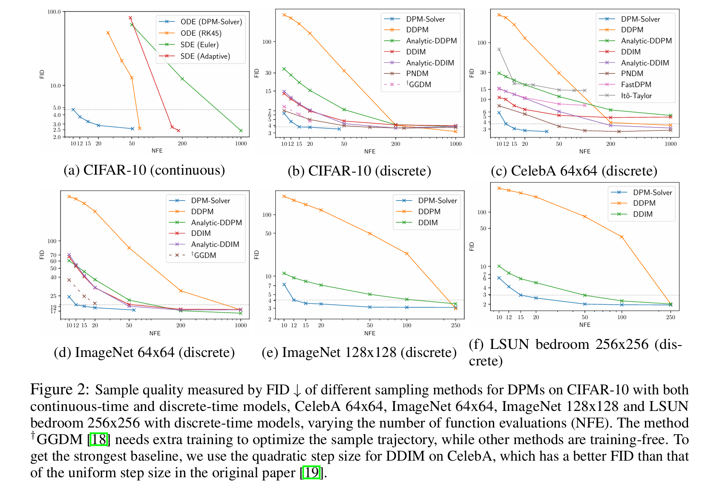 |
|---|
| 图2：使用不同采样方法从扩散概率模型（DPMs）中采样的样本质量，通过弗雷歇初始距离（FID）衡量。这些方法应用于CIFAR-10数据集上的连续时间和离散时间模型、CelebA 64x64数据集、ImageNet 64x64数据集、ImageNet 128x128数据集以及LSUN卧室256x256数据集的离散时间模型，并改变函数评估次数（NFE）。方法†GGDM [18] 需要额外训练以优化采样轨迹，而其他方法无需训练。为获得最强的基线结果，在CelebA数据集上对去噪扩散隐式模型（DDIM）使用二次步长，其FID比原始论文[19]中均匀步长的FID更优。 |
6 结论
我们解决了从扩散概率模型（DPMs）进行快速且无需训练的采样问题。我们提出了DPM-Solver，这是一种快速、专门用于求解扩散常微分方程（ODE）的无需训练的求解器，可在约10次函数评估步骤内实现对DPMs的快速采样。DPM-Solver利用了扩散ODE的半线性结构，直接逼近扩散ODE精确解的简化公式，该公式由噪声预测模型的指数加权积分构成。受指数积分器数值方法的启发，我们提出了一阶、二阶和三阶的DPM-Solver，以在理论上保证收敛的情况下逼近噪声预测模型的指数加权积分。我们提出了手动设定和自适应的步长调度，并将DPM-Solver应用于连续时间和离散时间的DPMs。我们的实验结果表明，DPM-Solver可以在各种数据集上，通过约10次函数评估生成高质量样本，与之前最先进的无需训练的采样器相比，实现了4 - 16倍的加速。
局限性和更广泛的影响
尽管DPM-Solver在加速性能方面前景良好，但它是为快速采样而设计的，可能不适用于加速DPMs的似然评估。此外，与常用的生成对抗网络（GANs）相比，使用DPM-Solver的扩散模型在实时应用中仍然不够快。另外，与其他深度生成模型一样，DPMs可能被用于生成有害的虚假内容，而本文提出的求解器可能会进一步放大深度生成模型在恶意应用中的潜在不良影响。
A 对噪声调度具有不变性的采样
在本节中，我们将进一步讨论命题3.1中的精确解，并对该公式给出一些见解。下面我们首先根据λ（即半对数信噪比）重新表述该命题。
命题3.1（扩散常微分方程的精确解）：给定在时间s处具有相应半对数信噪比$\lambda_{s}$的初始值$\hat{x}_{\lambda_{s}}$，扩散常微分方程（公式2.7）在时间t处具有相应半对数信噪比$\lambda_{t}$的解$\hat{x}_{\lambda_{t}}$为：
在接下来的小节中，我们将展示该公式将模型$\epsilon_{\theta}$与特定的噪声调度解耦，因此对噪声调度具有不变性。此外，命题3.1中对λ的变量变换与扩散模型的最大似然训练高度相关。我们将展示扩散模型的最大似然训练和采样都具有与噪声调度无关的不变性公式。
A.1 采样解与噪声调度的解耦
在本节中，我们将展示命题3.1可以将扩散常微分方程的精确解与特定的噪声调度（即函数$\alpha_{t}=\alpha(t)$和$\sigma_{t}=\sigma(t)$的选择）解耦。也就是说，给定起始点$\lambda_{s}$、终点$\lambda_{t}$、在$\lambda_{s}$处的初始值$\hat{x}_{\lambda_{s}}$以及噪声预测模型$\hat{\epsilon}_{\theta}$，$\hat{x}_{\lambda_{t}}$的解与$\lambda_{s}$和$\lambda_{t}$之间的噪声调度无关。
我们首先考虑VP型扩散模型，它与原始的去噪扩散概率模型（DDPM）等价。对于VP型扩散模型，我们始终有$\alpha_{t}^{2}+\sigma_{t}^{2}=1$，因此定义噪声调度等同于定义函数$\alpha_{t}=\alpha(t)$（例如，DDPM使用的噪声调度使得$\beta(t)=\frac{d log \alpha_{t}}{dt}$是t的线性函数，而改进的去噪扩散概率模型（i-DDPM）使用的噪声调度使得$\beta(t)=\frac{d log \alpha_{t}}{dt}$是t的余弦函数）。由于$\lambda_{t}=log \alpha_{t}-log \sigma_{t}$，我们有$\alpha_{t}=\sqrt{\frac{1}{1+e^{-2 \lambda_{t}}}}$和$\sigma_{t}=\sqrt{\frac{1}{1+e^{2 \lambda_{t}}}}$。因此，对于给定的$\lambda_{t}$，我们可以直接计算出$\alpha_{t}$和$\sigma_{t}$。记$\hat{\alpha}_{\lambda}:=\sqrt{\frac{1}{1+e^{-2 \lambda}}}$，我们有：
我们应该注意到，被积函数$e^{-\lambda} \hat{\epsilon}_{\theta}(\hat{x}_{\lambda}, \lambda)$是λ的函数，因此它从$\lambda_{s}$到$\lambda_{t}$的积分仅取决于起始点$\lambda_{s}$、终点$\lambda_{t}$以及函数$\hat{\epsilon}_{\theta}$，与中间值无关。由于其他系数（$\hat{\alpha}_{\lambda_{s}}$和$\hat{\alpha}_{\lambda_{t}}$）也仅取决于起始点$\lambda_{s}$和终点$\lambda_{t}$，我们可以得出结论，$\hat{x}_{\lambda_{t}}$与特定的噪声调度选择无关。直观地说，这是因为我们将公式（3.1）中原来对时间t的积分转换为对λ的积分，并且函数$f(t)$和$g(t)$被转换为一个解析公式$e^{-\lambda}$，该公式对$f(t)$和$g(t)$的特定选择具有不变性。最后，对于其他类型的扩散模型（如VE型和subVP型），通过对噪声预测模型进行等效缩放，它们都与VP型等价，正如文献[10]中所证明的那样。因此，这些类型的解也具有这种性质。
总之，命题3.1将扩散常微分方程的解与噪声调度解耦，这为我们设计针对扩散概率模型（DPMs）的定制采样器提供了机会。事实上，如3.2节所示，所提出的DPM-Solver的唯一近似是关于神经网络$\hat{\epsilon}_{\theta}$对λ的泰勒展开，而DPM-Solver通过解析计算其他系数（这些系数对应于特定的噪声调度）。直观地说，DPM-Solver尽可能地保留已知信息，仅对神经网络的难以处理的积分进行近似，因此它可以在更少的步骤内生成相当的样本。
A.2 选择λ的时间步对噪声调度具有不变性
如附录A.1所述，命题3.1的公式将采样解与噪声调度解耦。解取决于起始点$\lambda_{s}$和终点$\lambda_{t}$，并且对中间的噪声调度具有不变性。类似地，DPM-Solver算法的更新方程对中间的噪声调度也具有不变性。因此，如果我们选择了时间步${\lambda_{i}}_{i=0}^{M}$，那么DPM-Solver的解也随之确定，并且对中间的噪声调度具有不变性。
一种简单的选择λ时间步的方法是均匀划分$[\lambda_{T}, \lambda_{\epsilon}]$，这是我们实验中的设置。然而，我们相信存在更精确的选择时间步的方法，我们将其留作未来的工作。
A.3 与扩散模型最大似然训练的关系
有趣的是，连续时间扩散随机微分方程（SDEs）的最大似然训练也具有这种不变性。下面我们简要回顾一下扩散SDEs的最大似然训练损失，然后提出一种理解扩散模型的新视角。
记数据分布为$q_{0}(x_{0})$，正向过程在每个时间t的分布为$q_{t}(x_{t})$，反向过程在每个时间t的分布为$p_{t}(x_{t})$，其中$p_{T}=N(0, I)$。在文献[3]中证明了，$q_{0}$和$p_{0}$之间的KL散度可以由加权得分匹配损失界定：
其中$x_{t}=\alpha_{t} x_{0}+\sigma_{t} \epsilon$，C是与θ无关的常数。如3.1节所示，我们有：
因此，通过对$λ$进行变量变换，我们有：
这等价于文献[41，5.1节]中的重要性采样技巧和文献[10，公式（22）]中的连续时间扩散损失。与命题3.1相比，我们可以发现扩散模型的采样和最大似然训练都可以转换为关于λ的积分，使得公式对特定的噪声调度具有不变性，我们将其总结在表2中。这种训练和采样的不变性为理解扩散模型带来了新的视角。例如，我们可以直接根据（半）对数信噪比λ而不是时间t来定义噪声预测模型$\epsilon_{\theta}$，然后扩散模型的训练和采样可以在不进一步选择任何特定噪声调度的情况下进行。这一发现可能会统一扩散模型训练和推理的不同方式，我们将其留作未来的研究。
| 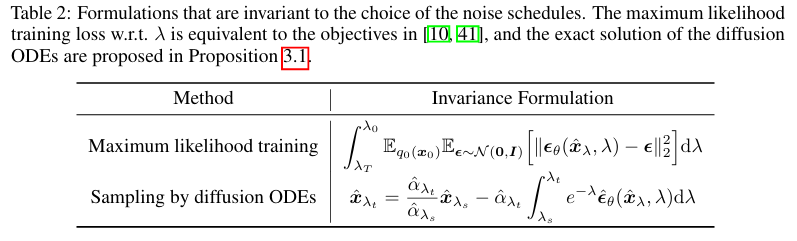 |
|---|
| 表2：对噪声调度选择具有不变性的公式。关于$λ$的最大似然训练损失等同于文献[10, 41]中的目标函数，并且在命题3.1中提出了扩散常微分方程的精确解。 |
B 定理3.2的证明
B.1 假设
在本节中，我们将$x_s$表示为从$x_T$出发的扩散常微分方程（公式2.7）的解。对于DPM-Solver-k，我们做出以下假设：
- 假设B.1：对于$0\leq j\leq k + 1$，$\frac{d^{j}\hat{\epsilon}_{\theta}(\hat{x}_{\lambda},\lambda)}{d\lambda^{j}}$（作为$\lambda$的函数）存在且连续。
- 假设B.2：函数$\epsilon_{\theta}(x,s)$关于其第一个参数$x$是利普希茨连续的。
- 假设B.3：$h_{max}=O(1/M)$。
我们注意到，第一个假设是泰勒定理（公式3.6）所要求的，第二个假设用于将$\epsilon_{\theta}(\tilde{x}_{s},s)$替换为$\epsilon_{\theta}(x_{s},s)+O(x_{s}-\tilde{x}_{s})$，以便关于$\lambda_{s}$的泰勒展开适用。最后一个假设是一个技术假设，用于排除过大的步长。
B.2 指数加权积分的一般展开
首先，我们推导指数加权积分的泰勒展开式。设$t < s$，则$\lambda_{t}>\lambda_{s}$。记$h:=\lambda_{t}-\lambda_{s}$，$k$阶全导数$\hat{\epsilon}_{\theta}^{(k)}(\hat{x}_{\lambda},\lambda):=\frac{d^{k}\hat{\epsilon}_{\theta}(\hat{x}_{\lambda},\lambda)}{d\lambda^{k}}$。对于$n\geq0$，$\hat{\epsilon}_{\theta}(\hat{x}_{\lambda},\lambda)$关于$\lambda$的$n$阶泰勒展开式为：
为了展开指数积分器，我们进一步定义：
它满足$\varphi_{k}(0)=\frac{1}{k!}$以及递推关系$\varphi_{k + 1}(z)=\frac{\varphi_{k}(z)-\varphi_{k}(0)}{z}$。通过对$\hat{\epsilon}_{\theta}(\hat{x}_{\lambda},\lambda)$进行泰勒展开，指数积分器可以重写为：
因此，公式（3.4）中$x_t$的解可以展开为：
最后，我们列出$k = 1,2,3$时$\varphi_{k}$的闭式：
B.3 $k = 1$时定理3.2的证明
证明：在公式（B.4）中取$n = 0$，$t = t_{i}$，$s = t_{i - 1}$，我们得到：
根据假设B.2和公式（3.7），有：
重复这个论证，我们发现：
从而完成证明。
B.4 $k = 2$时定理3.2的证明
我们证明算法4中DPM-Solver-2一般形式的离散化误差。
证明：首先，对于$0 < t < s < T$，$h:=\lambda_{t}-\lambda_{s}$，我们考虑以下更新：
注意，上述更新与DPM-Solver-2的单步更新相同，只是将$\tilde{x}_{t_{i - 1}}$替换为精确解$x_{t_{i - 1}}$，其中$s = t_{i - 1}$，$t = t_{i}$ 。一旦我们证明了$\overline{x}_{t}=x_{t}+O(h^{3})$，就可以通过与附录B.3类似的论证表明$\tilde{x}_{t_{i}}=x_{t_{i}}+O(h_{max }^{3})+O(\tilde{x}_{t_{i-1}}-x_{t_{i-1}})$，从而完成证明。
在剩下的部分，我们证明$\overline{x}_{t}=x_{t}+O(h^{3})$。
在公式（B.4）中取$n = 1$，我们得到：
由公式（B.1），我们有：
注意，根据$\epsilon_{\theta}$关于$x$的利普希茨连续性（假设B.2），有：
其中最后一个等式的证明与$k = 1$时类似。由于$e^{h}-1=O(h)$，上述式子中的第二项为$O(h^{3})$。因为$\lambda_{s_{1}}-\lambda_{s}=r_{1} h$，$\varphi_{1}(h)=(e^{h}-1)/h$且$\varphi_{2}(h)=(e^{h}-h - 1)/h^{2}$，我们发现：
然后，注意到：
证明完成。
B.5 $k = 3$时定理3.2的证明
证明：与附录B.4类似，只需证明对于$0 < t < s < T$且$h=\lambda_{s}-\lambda_{t}$，以下更新的误差为$\overline{x}_{t}=x_{t}+O(h^{4})$：
首先，我们证明：
与附录B.4的证明类似，由于$\frac{e^{r_{2} h - 1}}{r_{2} h}-1=O(h)$且$\overline{u}_{1}=x_{s_{1}}+O(h^{2})$，则：
设$h_{2}=r_{2} h$，然后按照附录B.4的证明思路，只需验证：
通过应用泰勒展开，上述式子成立。
利用$\overline{u}_{2}=x_{s_{2}}+O(h^{3})$和$\lambda_{s_{2}}-\lambda_{s}=r_{2} h=\frac{2}{3} h$，我们发现：
将其与$n = 2$时公式(B.4)中的泰勒展开式进行比较：
我们需要检验以下条件：
前两个条件是显然的。最后一个条件由下式推出：
因此，$\tilde{\boldsymbol{x}}_t = \boldsymbol{x}_t + \mathcal{O}(h^4)$。
B.6 与显式指数龙格 - 库塔（expRK）方法的联系
假设我们有一个如下形式的常微分方程：
其中$\alpha \in \mathbb{R}$，$N(x_{t}, t) \in \mathbb{R}^{D}$是关于$x_{t}$的非线性函数。给定在时间$t$的初始值$x_{t}$，对于$h>0$，在时间$t + h$的真实解为：
指数龙格 - 库塔方法$[25, 31]$使用一些中间点来近似积分$\int e^{-\alpha \tau} N(x_{t+\tau}, t+\tau) d \tau$。我们提出的DPM - Solver受到了相同技术的启发，用于在$\alpha = 1$且$N = \tilde{\epsilon}_{\theta}$时近似相同的积分。然而，DPM - Solver与expRK方法不同，因为它们的线性项$e^{\alpha h} x_{t}$与我们的线性项$\frac{\alpha_{t + h}}{\alpha_{t}} x_{t}$不同。总之，DPM - Solver在推导指数加权积分的高阶近似时，受到了expRK相同技术的启发，但DPM - Solver的公式与expRK不同，它是针对扩散常微分方程的特定公式定制的。
C DPM-Solver算法
我们首先在算法3、4、5中列出详细的DPM-Solver-1、DPM-Solver-2、DPM-Solver-3。请注意，DPM-Solver-2是一般情况，其中$r_1 \in (0,1)$，在3.2节中我们通常将DPM-Solver-2的$r_1$设置为0.5。
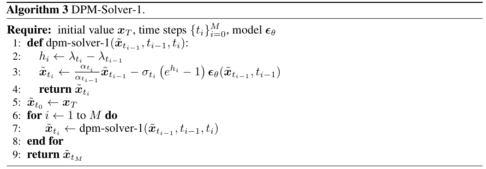
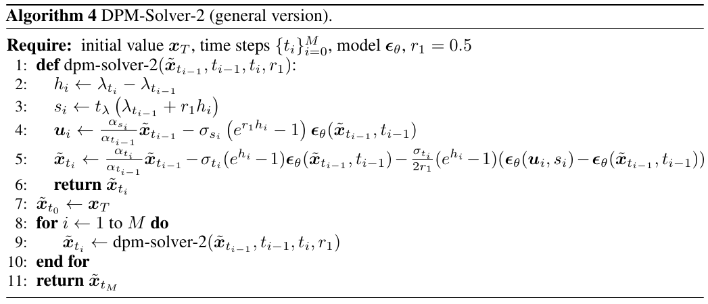
然后我们列出自适应步长算法，分别命名为DPM-Solver-12（结合DPM-Solver-1和DPM-Solver-2；算法6）和DPM-Solver-23（结合DPM-Solver-2和DPM-Solver-3；算法7）。我们遵循文献[20]，对于图像数据，将绝对容差$\epsilon_{atol}$设为$\frac{x_{max}-x_{min}}{256}$，对于VP型DPMs，该值为0.0078。我们可以调整相对容差$\epsilon_{rtol}$来平衡精度和函数评估次数（NFE），并且发现$\epsilon_{rtol}=0.05$就足够好，且能快速收敛。
在实践中，自适应步长求解器的输入是批量数据。我们简单地选择$E_2$和$E_3$作为所有批量数据的最大值。此外，我们通过$|s - \epsilon|>10^{-5}$来实现$s>\epsilon$的比较，以避免数值问题。
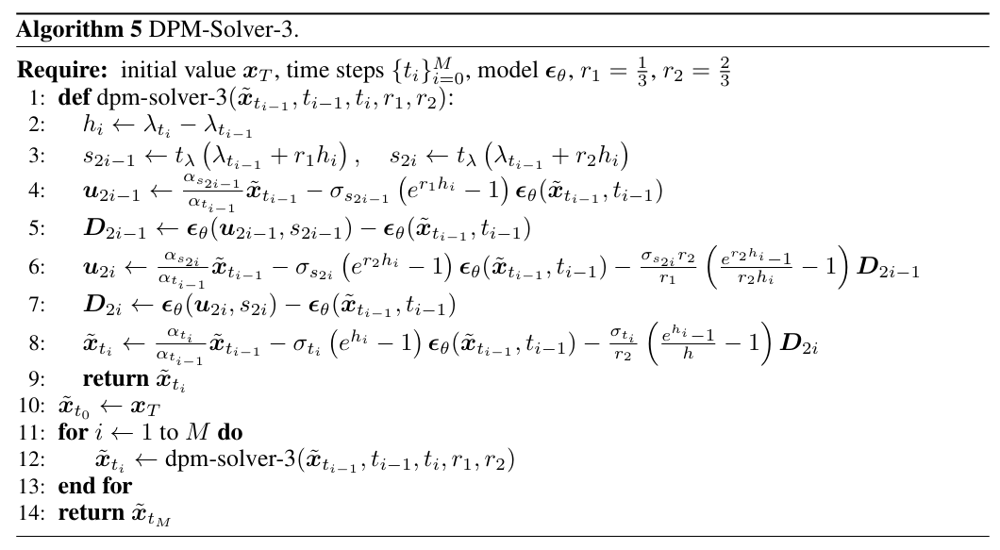
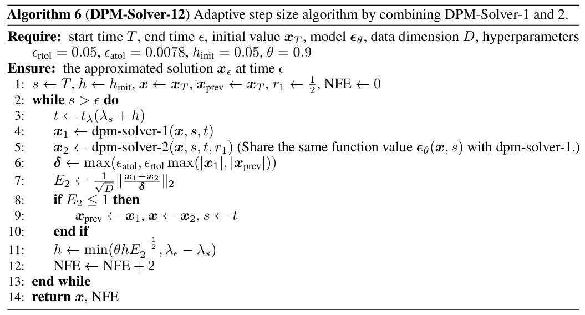
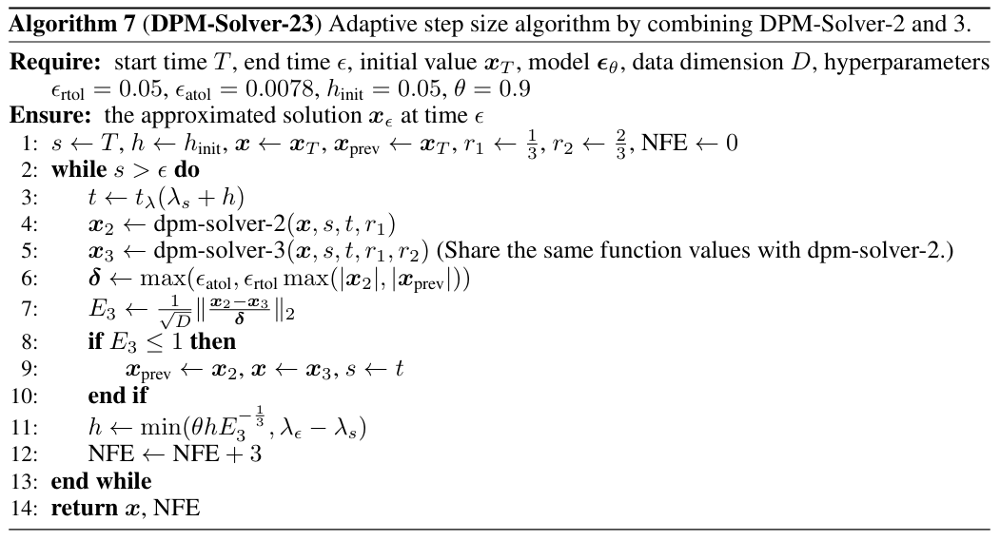
D DPM-Solver的实现细节
D.1 采样的结束时间
从理论上讲，我们需要求解从时间T到时间0的扩散常微分方程来生成样本。在实践中，噪声预测模型$\epsilon_{\theta}(x_{t}, t)$的训练和评估通常从时间T到时间$\epsilon$开始，以避免在t接近0时出现数值问题，其中$\epsilon > 0$是一个超参数 。
与基于扩散随机微分方程（SDE）的采样方法不同，我们在时间$\epsilon$的最后一步不添加 “去噪” 技巧（即将噪声方差设置为零），而是使用DPM-Solver直接求解从T到$\epsilon$的扩散常微分方程，因为我们发现这样的效果已经足够好。
对于离散时间的DPM，我们首先将模型转换为连续时间（见附录D.2），然后从时间T求解到时间t。
D.2 从离散时间DPM采样
在本节中，我们讨论离散时间DPM更普遍的情况，其中我们考虑1000步的DPM和4000步的DPM，同时也考虑采样的结束时间$\epsilon$。
离散时间DPM在N个固定时间步$\{t_{n}\}_{n = 1}^{N}$训练噪声预测模型。在实践中，$N = 1000$或$N = 4000$，并且4000步DPM的实现会将其时间步转换到1000步DPM的时间步范围内。具体来说，噪声预测模型由$\tilde{\epsilon}_{\theta}(x_{n}, \frac{1000n}{N})$参数化，其中$n = 0, \cdots, N - 1$ ，每个$x_{n}$对应于时间$t_{n + 1}$的值。在实践中，这些离散时间DPM通常在$[0, T]$之间选择均匀的时间步，因此$t_{n}=\frac{nT}{N}$，$n = 1, \cdots, N$。
然而，离散时间噪声预测模型无法预测小于最小时间$t_{1}$的噪声。由于最小时间步$t_{1}=\frac{T}{N}$，且在时间$t_{1}$对应的离散时间噪声预测模型为$\tilde{\epsilon}_{\theta}(x_{0}, 0)$，我们需要将离散时间步$[t_{1}, t_{N}]=[\frac{T}{N}, T]$ “缩放” 到连续时间范围$[\epsilon, T]$。我们提出以下两种缩放类型：
- 类型1：将离散时间步$[t_{1}, t_{N}]=[\frac{T}{N}, T]$缩放到连续时间范围$[\frac{T}{N}, T]$，并对于$t \in [\epsilon, \frac{T}{N}]$，令$\epsilon_{\theta}(\cdot, t)=\epsilon_{\theta}(\cdot, \frac{T}{N})$。在这种情况下，我们可以通过以下方式定义连续时间噪声预测模型：其中，连续时间$t \in [\epsilon, \frac{T}{N}]$映射到离散输入0，连续时间T映射到离散输入$\frac{1000(N - 1)}{N}$。
- 类型2：将离散时间步$[t_{1}, t_{N}]=[\frac{T}{N}, T]$缩放到连续时间范围$[0, T]$。在这种情况下，我们可以通过以下方式定义连续时间噪声预测模型：其中，连续时间0映射到离散输入0，连续时间T映射到离散输入$\frac{1000(N - 1)}{N}$ 。
注意，$\tilde{\epsilon}_{\theta}$的输入时间可能不是整数，但我们发现噪声预测模型仍然可以很好地工作，我们推测这是由于平滑的时间嵌入（例如位置嵌入 ）。通过这种重新参数化，噪声预测模型可以采用连续时间步作为输入，因此我们也可以使用DPM-Solver进行快速采样。
在实践中，我们令$T = 1$，最小离散时间$t_{1}=10^{-3}$。对于固定的函数评估次数K，我们通过实验发现，对于较小的K，$\epsilon = 10^{-3}$的类型1可能具有更好的样本质量；对于较大的K，$\epsilon = 10^{-4}$的类型2可能具有更好的样本质量。详细结果请参见附录E。
D.3 20次函数评估的DPM-Solver
给定固定的函数评估次数预算$K \leq 20$，我们将区间$[\lambda_{T}, \lambda_{\epsilon}]$均匀划分为$M = (\lfloor K / 3\rfloor + 1)$段，并采取M步来生成样本。这M步取决于K除以3的余数R，以确保函数评估的总次数恰好为K。
- 如果$R = 0$，我们首先采取$M - 2$步的DPM-Solver-3，然后采取1步的DPM-Solver-2和1步的DPM-Solver-1。函数评估的总次数为$3 \cdot (\frac{K}{3} - 1)+2 + 1 = K$。
- 如果$R = 1$，我们首先采取$M - 1$步的DPM-Solver-3，然后采取1步的DPM-Solver-1。函数评估的总次数为$3 \cdot (\frac{K - 1}{3})+1 = K$。
- 如果$R = 2$，我们首先采取$M - 1$步的DPM-Solver-3，然后采取1步的DPM-Solver-2。函数评估的总次数为$3 \cdot (\frac{K - 2}{3})+2 = K$。
我们通过实验发现，这种时间步的设计可以显著提高生成质量，DPM-Solver可以在10步内生成相当的样本，在20步内生成高质量的样本。
D.4 函数$t_{\lambda}(\cdot)$（$\lambda(t)$的反函数）的解析表达式
计算$t_{\lambda}(\cdot)$的成本可以忽略不计，因为对于先前DPM中使用的$\alpha_{t}$和$\sigma_{t}$的噪声调度（“线性” 和 “余弦”），$\lambda(t)$及其反函数$t_{\lambda}(\cdot)$都有解析表达式。这里我们主要考虑方差保持类型，因为它是使用最广泛的类型。其他类型（方差爆炸型和子方差保持型）的函数可以类似地推导出来。
- 线性噪声调度：我们有其中$\beta_{0}=0.1$，$\beta_{1}=20$，遵循文献[3]。由于$\sigma_{t}=\sqrt{1 - \alpha_{t}^{2}}$，我们可以解析地计算$\lambda_{t}$。此外，其反函数为为了减少数值问题的影响，我们可以通过以下等效公式计算$t_{\lambda}$：并且我们在$[\epsilon, T]$之间求解扩散常微分方程，其中$T = 1$。
- 余弦噪声调度：记其中$s = 0.008$，遵循文献[16]。由于文献[16]对导数进行了裁剪以确保数值稳定性，我们也将最大时间裁剪为$T = 0.9946$。因为$\sigma_{t}=\sqrt{1 - \alpha_{t}^{2}}$，我们可以解析地计算$\lambda_{t}$。此外，给定一个固定的$\lambda$，令它计算出$\lambda$对应的$\log \alpha$。那么反函数为并且我们在$[\epsilon, T]$之间求解扩散常微分方程，其中$T = 0.9946$。
D.5 DPM-Solver的条件采样
DPM-Solver也可以用于条件采样，只需进行简单修改。条件生成需要从条件扩散常微分方程中采样，该方程包含条件噪声预测模型。我们遵循分类器引导方法，将条件噪声预测模型定义为$\epsilon_{\theta}(x_{t}, t, y):=\epsilon_{\theta}(x_{t}, t)-s \cdot \sigma_{t} \nabla_{x} \log p_{t}(y | x_{t} ; \theta)$，其中$p_{t}(y | x_{t} ; \theta)$是一个预训练的分类器，$s$是分类器引导尺度（默认值为1.0）。因此，我们可以使用DPM-Solver求解这个扩散常微分方程，以实现快速条件采样，如图1所示。
D.6 数值稳定性
由于在DPM-Solver算法中需要计算$e^{h_{i}} - 1$，我们遵循文献[10]，使用$expm1(h_{i})$而不是$exp(h_{i}) - 1$来提高数值稳定性。
E 实验细节
我们测试了用于对最广泛使用的方差保持（VP）型扩散概率模型（DPM）进行采样的方法。在这种情况下，对于所有的$t\in[0,T]$，都有$\alpha_{t}^{2}+\sigma_{t}^{2}=1$，且$\tilde{\sigma}=1$。尽管如此，我们的方法和理论结果具有通用性，且与噪声调度$\alpha_{t}$和$\sigma_{t}$的选择无关。
在所有实验中，我们在NVIDIA A40 GPU上评估DPM-Solver。不过，计算资源也可以是其他类型的GPU，如NVIDIA GeForce RTX 2080Ti，因为我们可以调整采样的批量大小。
E.1 关于λ的扩散常微分方程：
或者，扩散常微分方程（ODE）可以重新参数化到$\lambda$域。在本节中，我们针对VP类型提出关于$\lambda$的扩散ODE公式，其他类型可以类似推导得出。
对于给定的$\lambda$，记$\hat{\alpha}_\lambda := \alpha_{t(\lambda)}$，$\hat{\sigma}_\lambda := \sigma_{t(\lambda)}$。由于$\hat{\alpha}_\lambda^2 + \hat{\sigma}_\lambda^2 = 1$，我们可以证明$\frac{\mathrm{d}\lambda}{\mathrm{d}\hat{\alpha}_\lambda} = \frac{1}{\hat{\alpha}_\lambda \hat{\sigma}_\lambda}$，所以$\frac{\mathrm{d}\log\hat{\alpha}_\lambda}{\mathrm{d}\lambda} = \hat{\sigma}_\lambda^2$ 。将变量变换应用于公式(2.7) ，我们有：
常微分方程(E.1) 也可以直接用龙格 - 库塔（RK）方法求解，并且在表1（文档中未给出表1具体内容 ）中关于RK2($\lambda$)和RK3($\lambda$)的实验里，我们使用了这种公式。
E.2 代码实现：
我们使用JAX（用于连续时间DPM）和PyTorch（用于离散时间DPM）实现了代码，代码发布在https://github.com/LuChengTHU/dpm-solver 。
E.3 与连续时间采样方法的样本质量比较：
表3展示了详细的FID结果，与图2a相对应。我们使用了文献[3]中的官方代码和检查点，代码许可证为Apache License 2.0。我们使用了他们发布的 “VP deep” 类型的 “checkpoint_8”。我们比较了$\epsilon = 10^{-3}$和$\epsilon = 10^{-4}$时的方法。我们发现，基于扩散随机微分方程（SDE）的采样方法在$\epsilon = 10^{-3}$时可以获得更好的样本质量；而基于扩散常微分方程（ODE）的采样方法在$\epsilon = 10^{-4}$时可以获得更好的样本质量。对于DPM-Solver，我们发现当函数评估次数（NFE）少于15时，$\epsilon = 10^{-3}$时的FID比$\epsilon = 10^{-4}$时更好；而当NFE超过15时，$\epsilon = 10^{-4}$时的FID比$\epsilon = 10^{-3}$时更好。
| 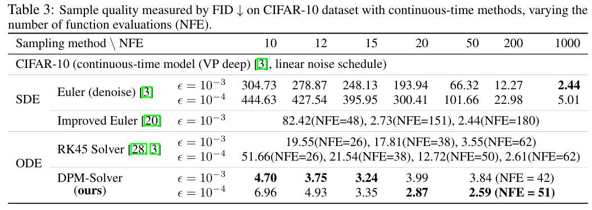 |
|---|
| 表3：在CIFAR-10数据集上，采用连续时间方法，通过改变函数评估次数（NFE），以FID衡量的样本质量。 |
对于采用欧拉离散化的扩散SDE，我们使用文献[3]中的PC采样器，采用 “euler_maruyama” 预测器且无校正器，在T和$\epsilon$之间使用均匀时间步长。我们在最后一步添加了 “去噪” 技巧，这可以显著提高$\epsilon = 10^{-3}$时的FID分数。
对于采用改进欧拉离散化的扩散SDE[20]，我们遵循其原始论文中的结果，该结果仅包含$\epsilon = 10^{-3}$时的结果。相应的相对容差$\epsilon_{rel}$分别为0.50、0.10和0.05。
对于使用RK45求解器的扩散ODE，我们使用文献[3]中的代码，并调整求解器的绝对容差（atol）和相对容差（rtol）。对于从小到大的NFE，$\epsilon = 10^{-3}$时的结果，我们使用相同的$atol = rtol = 0.1, 0.01, 0.001$；对于$\epsilon = 10^{-4}$时的结果，我们使用相同的$atol = rtol = 0.1, 0.05, 0.02, 0.01, 0.001$。
对于使用DPM-Solver的扩散ODE，当$NFE\leq20$时，我们使用附录D.3中的方法；当NFE > 20时，使用附录C中的自适应步长求解器。对于$\epsilon = 10^{-3}$，我们使用相对容差$\epsilon_{rtol}=0.05$的DPM-Solver-12；对于$\epsilon = 10^{-4}$，我们使用相对容差$\epsilon_{rtol}=0.05$的DPM-Solver-23。
E.4 与RK方法的样本质量比较：
表1展示了RK方法与DPM-Solver-2和DPM-Solver-3的不同性能。我们在本节列出详细设置。
假设我们有一个常微分方程$\frac{dx_{t}}{dt}=F(x_{t},t)$，从时间$t_{i - 1}$的$\tilde{x}_{t_{i - 1}}$开始，我们使用RK2以以下公式（称为显式中点法）来近似时间$t_{i}$的解$\overline{x}_{t_{i}}$：
$h_{i}=t_{i}-t_{i - 1}$
$s_{i}=t_{i - 1}+\frac{1}{2}h_{i}$
$u_{i}=\tilde{x}_{t_{i - 1}}+\frac{h_{i}}{2}F(\tilde{x}_{t_{i - 1}},t_{i - 1})$
$\tilde{x}_{t_{i}}=\tilde{x}_{t_{i - 1}}+h_{i}F(u_{i},s_{i})$
我们使用以下RK3（称为 “Heun三阶法”）来近似时间$t_{i}$的解$\tilde{x}_{t_{i}}$，因为它与我们提出的DPM-Solver-3非常相似：
$h_{i}=t_{i}-t_{i - 1}, r_{1}=\frac{1}{3}, r_{2}=\frac{2}{3}$
$s_{2i - 1}=t_{i - 1}+r_{1}h_{i}, s_{2i}=t_{i - 1}+r_{2}h_{i}$
$u_{2i - 1}=\tilde{x}_{t_{i - 1}}+r_{1}h_{i}F(\tilde{x}_{t_{i - 1}},t_{i - 1})$
$u_{2i}=\tilde{x}_{t_{i - 1}}+r_{2}h_{i}F(u_{2i - 1},s_{2i - 1})$
$\tilde{x}_{t_{i}}=\tilde{x}_{t_{i - 1}}+\frac{h_{i}}{4}F(\tilde{x}_{t_{i - 1}},t_{i - 1})+\frac{3h_{i}}{4}F(u_{2i},s_{2i})$
对于RK2(t)的结果，我们使用公式（2.7）中的$F(x_{t},t)=h_{\theta}(x_{t},t)$；对于RK2(λ)和RK3(λ)的结果，我们使用公式（E.1）中的$F(\hat{x}_{\lambda},\lambda)=\hat{h}_{\theta}(\hat{x}_{\lambda},\lambda)$。在所有实验中，我们对t或λ使用均匀步长。
E.5 与离散时间采样方法的样本质量比较：
我们将DPM-Solver与其他用于DPM的离散时间采样方法进行比较，结果如表4和表5所示。我们使用文献[19]中的代码对DDPM和DDIM进行采样，代码许可证为MIT许可证。我们使用文献[21]中的代码对Analytic-DDPM和Analytic-DDIM进行采样，其许可证未知。我们直接采用GGDM[18]原始论文中的最佳结果。
| 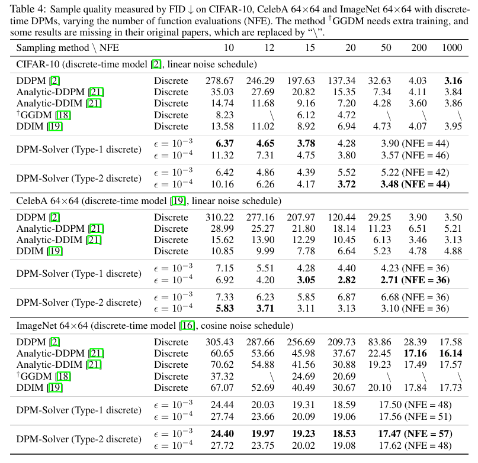 |
|---|
| 表4：在CIFAR - 10、CelebA 64×64和ImageNet 64×64数据集上，使用离散时间扩散概率模型（DPM），通过改变函数评估次数（NFE），以FID衡量的样本质量。方法†GGDM需要额外训练，其原始论文中部分结果缺失，用“\”代替。 |
| 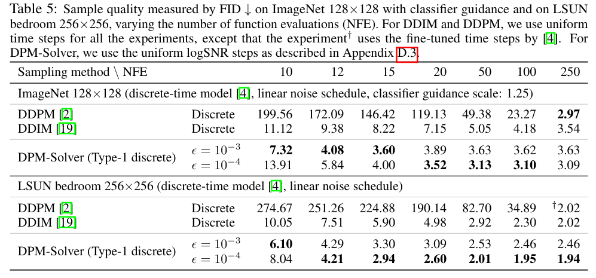 |
|---|
| 表5：在具有分类器引导的ImageNet 128×128数据集以及LSUN卧室256×256数据集上，通过改变函数评估次数（NFE），以FID衡量的样本质量。对于去噪扩散隐式模型（DDIM）和去噪扩散概率模型（DDPM），除了实验†使用文献[4]中微调的时间步长外，我们在所有实验中均采用均匀时间步长。对于DPM-Solver，我们使用附录D.3中所述的均匀对数信噪比（logSNR）步长。 |
在CIFAR-10实验中，我们使用文献[2]中的预训练检查点，该检查点也在文献[19]发布的代码中提供。我们对DDPM和DDIM使用二次时间步长，根据经验，这比均匀时间步长具有更好的FID性能。我们对Analytic-DDPM和Analytic-DDIM使用均匀时间步长。对于DPM-Solver，我们使用Type-1离散和Type-2离散方法将离散时间模型转换为连续时间模型。当$NFE\leq20$时，我们使用附录D.3中的方法；当NFE > 20时，使用附录C中的自适应步长求解器。在所有实验中，我们使用相对容差$\epsilon_{rtol}=0.05$的DPM-Solver-12。
在CelebA 64x64实验中，我们使用文献[19]中的预训练检查点。我们对DDPM和DDIM使用二次时间步长，根据经验，这比均匀时间步长具有更好的FID性能。我们对Analytic-DDPM和Analytic-DDIM使用均匀时间步长。对于DPM-Solver，我们使用Type-1离散和Type-2离散方法将离散时间模型转换为连续时间模型。当$NFE\leq20$时，我们使用附录D.3中的方法；当NFE > 20时，使用附录C中的自适应步长求解器。在所有实验中，我们使用相对容差$\epsilon_{rtol}=0.05$的DPM-Solver-12。值得注意的是，我们在CelebA 64x64上的最佳FID结果甚至优于1000步的DDPM（以及所有其他方法）。
在ImageNet 64x64实验中，我们使用文献[16]中的预训练检查点，代码许可证为MIT许可证。我们按照文献[19]对DDPM和DDIM使用均匀时间步长。我们对Analytic-DDPM和Analytic-DDIM使用均匀时间步长。对于DPM-Solver，我们使用Type-1离散和Type-2离散方法将离散时间模型转换为连续时间模型。当$NFE\leq20$时，我们使用附录D.3中的方法；当NFE > 20时，使用附录C中的自适应步长求解器。在所有实验中，我们使用相对容差$\epsilon_{rtol}=0.05$的DPM-Solver-23。需要注意的是，ImageNet数据集包含真实的人物照片，可能存在隐私问题，如文献[42]中所讨论的那样。
在ImageNet 128x128实验中，我们使用文献[4]中的预训练检查点（用于扩散模型和分类器模型）进行带分类器引导的采样，代码许可证为MIT许可证。我们按照文献[19]对DDPM和DDIM使用均匀时间步长。对于DPM-Solver，我们仅使用Type-1离散方法将离散时间模型转换为连续时间模型。当$NFE\leq20$时，我们使用附录D.3中的方法；当NFE > 20时，使用附录C中相对容差$\epsilon_{rtol}=0.05$的自适应步长求解器DPM-Solver-12。在所有实验中，我们将分类器引导尺度$s = 1.25$，这是文献[4]中DDIM的最佳设置（详细信息请参考他们的表14）。
在LSUN bedroom 256x256实验中，我们使用文献[4]中的无条件预训练检查点，代码许可证为MIT许可证。我们按照文献[19]对DDPM和DDIM使用均匀时间步长。对于DPM-Solver，我们仅使用Type-1离散方法将离散时间模型转换为连续时间模型。我们对DPM-Solver使用附录D.3中的方法。
E.6 比较DPM-Solver的不同阶数
我们还比较了DPM-Solver不同阶数的样本质量，结果如表6所示。我们使用对λ采用均匀时间步长的DPM-Solver-1、DPM-Solver-2和DPM-Solver-3，当NFE小于20时，使用附录D.3中的快速版本，我们将其命名为DPM-Solver-fast。对于离散时间模型，我们仅比较Type-2离散方法，Type-1的结果类似。
| 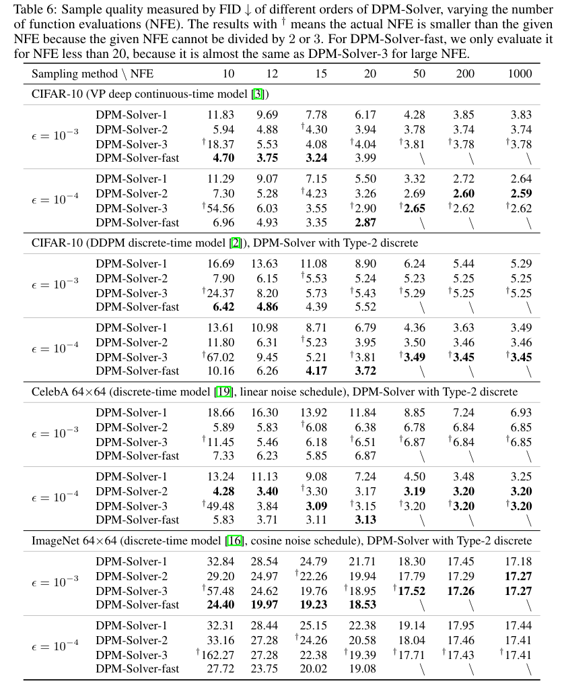 |
|---|
| 表6：不同阶数的DPM-Solver在不同函数评估次数（NFE）下，通过FID衡量的样本质量。带有†的结果表示实际NFE小于给定的NFE，这是因为给定的NFE不能被2或3整除。对于DPM-Solver-fast，我们仅在NFE小于20时对其进行评估，因为当NFE较大时，它与DPM-Solver-3的效果几乎相同。 |
由于DPM-Solver-2的实际NFE是$2\times\lfloor NFE/2\rfloor$，DPM-Solver-3的实际NFE是$3\times\lfloor NFE/3\rfloor$，这可能小于NFE，我们使用符号†来表示实际NFE小于给定的NFE。我们发现，当NFE小于20时，所提出的快速版本（DPM-Solver-fast）通常比单一阶数的方法更好；当NFE较大时，DPM-Solver-3优于DPM-Solver-2，DPM-Solver-2优于DPM-Solver-1，这与我们提出的收敛速率分析相符。
E.7 DPM-Solver与DDIM的运行时间比较：
从理论上讲，对于相同的NFE，DPM-Solver和DDIM的运行时间几乎相同（与NFE呈线性关系），因为主要的计算成本是对大型神经网络$\epsilon_{\theta}$的串行评估，而其他系数的计算成本可以忽略不计。
表7展示了在单个NVIDIA A40上，DPM-Solver和DDIM对离散时间扩散模型进行采样时，不同数据集和NFE下单个批次的运行时间。我们使用torch.cuda.Event和torch.cuda.synchronize来精确计算运行时间。我们对每个数据集使用离散时间预训练扩散模型。我们评估8个批次的运行时间，并计算运行时间的平均值和标准差。由于GPU内存限制，对于LSUN bedroom 256x256，我们使用64的批量大小；对于其他数据集，我们使用128的批量大小。
| 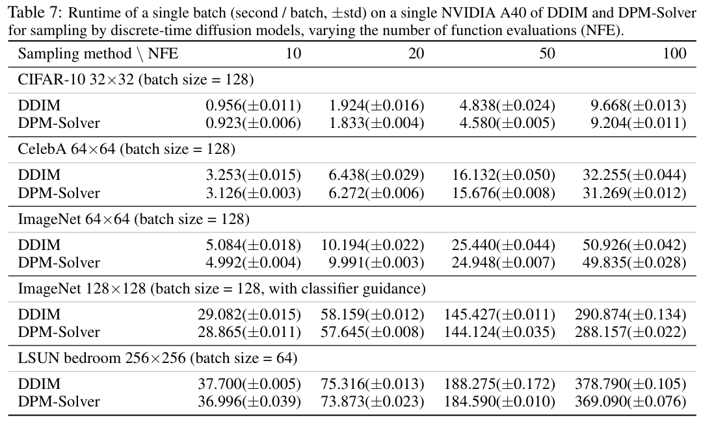 |
|---|
| 表7：在单个NVIDIA A40上，使用离散时间扩散模型进行采样时，去噪扩散隐式模型（DDIM）和DPM-Solver在不同函数评估次数（NFE）下单个批次的运行时间（秒/批次，±标准差 ）。 |
对于DDIM，我们使用官方实现。我们发现，我们实现的DPM-Solver减少了一些系数的重复计算，因此在相同的NFE下，DPM-Solver比他们实现的DDIM略快。尽管如此，运行时间评估结果表明，对于相同的NFE，DPM-Solver和DDIM的运行时间几乎相同，并且运行时间与NFE大致呈线性关系。因此，NFE的加速比几乎就是实际运行时间的加速比，所以所提出的DPM-Solver可以大大加快DPM的采样速度。
E.8 ImageNet 256x256上的条件采样
对于图1中的条件采样，我们使用文献[4]中带分类器引导（ADM-G）的预训练检查点，分类器尺度为1.0。代码许可证为MIT许可证。我们对DDIM使用均匀时间步长，对DPM-Solver使用附录D.3中的快速版本（DPM-Solver-fast），步数分别为10、15、20和100。
图3展示了DDIM和DPM-Solver的条件采样结果。我们发现，具有15次函数评估的DPM-Solver生成的样本与具有100次函数评估的DDIM生成的样本质量相当。
| 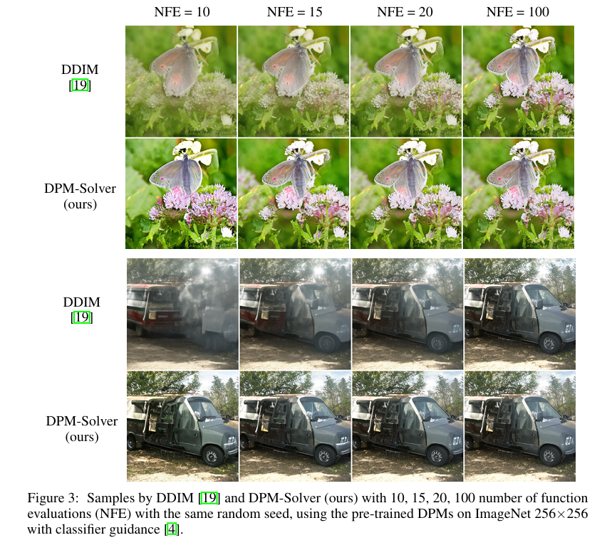 |
|---|
| 图3：使用在ImageNet 256×256上预训练且带有分类器引导的扩散概率模型（DPM）[4]，采用相同随机种子，分别使用去噪扩散隐式模型（DDIM）[19]和我们的DPM-Solver，在函数评估次数（NFE）为10、15、20、100时生成的样本。 |
E.9 额外样本
在CIFAR-10、CelebA 64x64、ImageNet 64x64、LSUN bedroom 256x256[40]、ImageNet 256x256上的额外采样结果如图4 - 8所示。
| 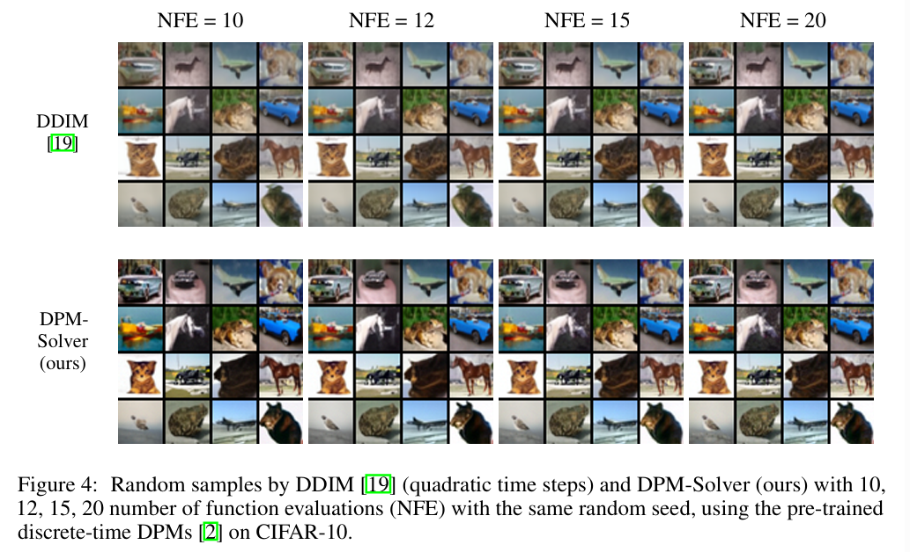 |
|---|
| 图4：使用在CIFAR-10数据集上预训练的离散时间扩散概率模型（DPM）[2]，采用相同随机种子，分别使用去噪扩散隐式模型（DDIM）[19]（二次时间步长）和我们的DPM-Solver，在函数评估次数（NFE）为10、12、15、20时生成的随机样本。 |
| 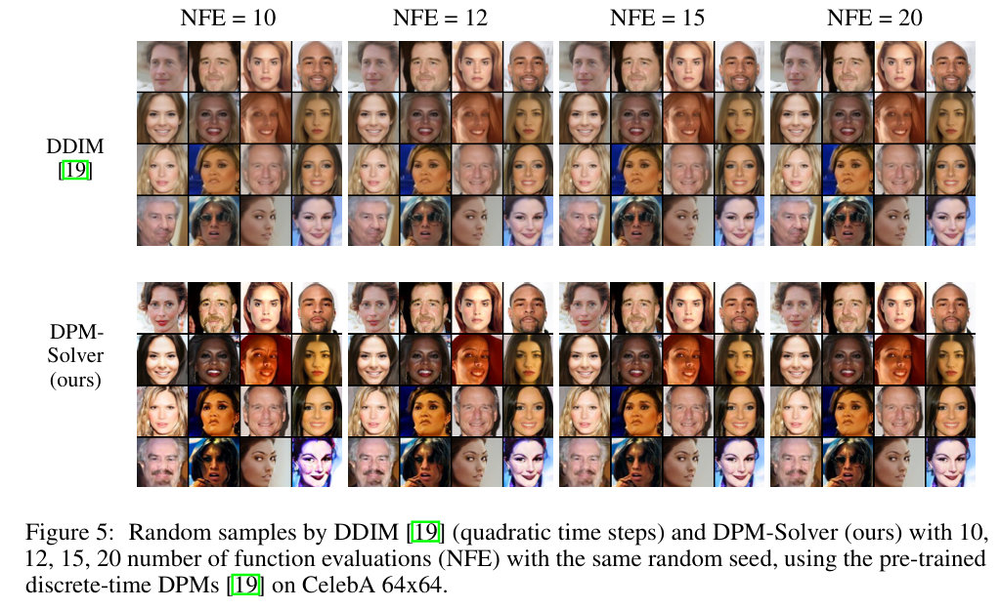 |
|---|
| 图5：使用在CelebA 64x64数据集上预训练的离散时间扩散概率模型（DPM）[19]，在相同随机种子下，采用去噪扩散隐式模型（DDIM）[19]（二次时间步长）和我们的DPM-Solver，在函数评估次数（NFE）分别为10、12、15、20时生成的随机样本。 |
| 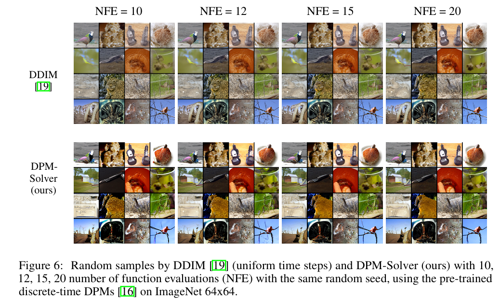 |
|---|
| 图6：使用在ImageNet 64x64上预训练的离散时间扩散概率模型（DPM）[16]，在相同随机种子下，采用去噪扩散隐式模型（DDIM）[19]（均匀时间步长）和我们的DPM-Solver，在函数评估次数（NFE）为10、12、15、20时生成的随机样本。 |
| 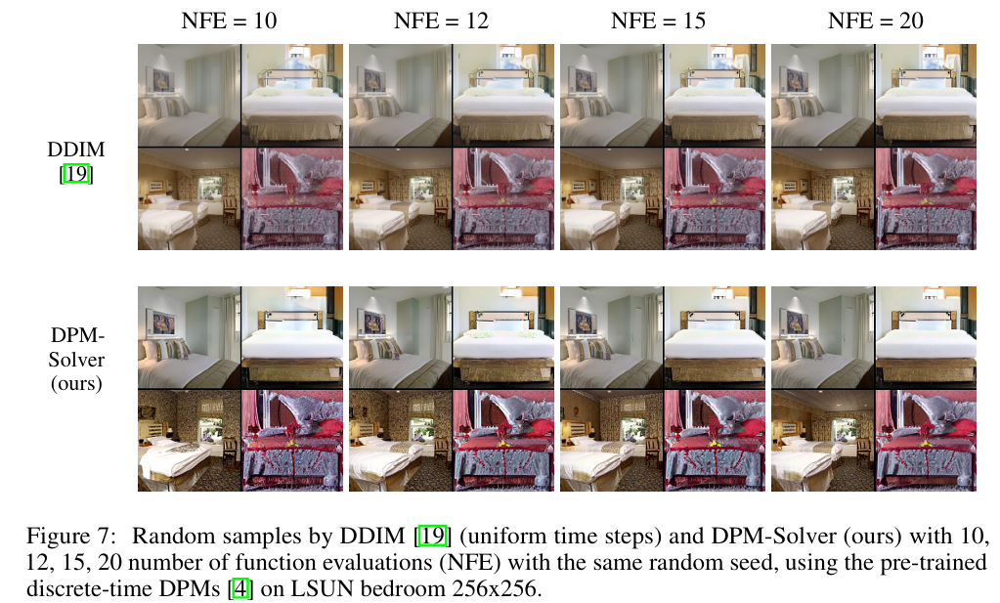 |
|---|
| 图7：使用在LSUN卧室256x256数据集上预训练的离散时间扩散概率模型（DPM）[4]，在相同随机种子下，采用去噪扩散隐式模型（DDIM）[19]（均匀时间步长）和我们的DPM-Solver，在函数评估次数（NFE）为10、12、15、20时生成的随机样本。 |
| 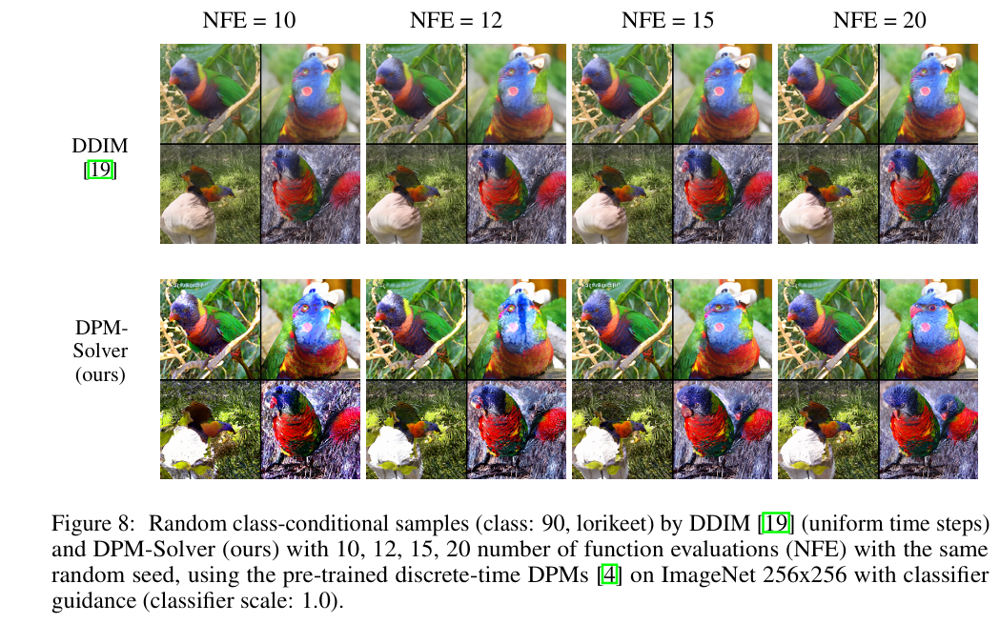 |
|---|
| 图8：使用在ImageNet 256x256上预训练且带有分类器引导（分类器引导尺度为1.0）的离散时间扩散概率模型（DPM）[4]，在相同随机种子下，采用去噪扩散隐式模型（DDIM）[19]（均匀时间步长）和我们的DPM-Solver，在函数评估次数（NFE）为10、12、15、20时生成的随机类别条件样本（类别：90，吸蜜鹦鹉）。 |
文章总结
本文发表于2022-NeurIps-Oral，提出了扩散ODEs解的精确公式，通过解析计算解的线性部分，而不是像以往工作那样将所有项都留给黑箱ODE求解器处理。通过变量变换，解可以等效简化为神经网络的指数加权积分。
创新点与主要思想
前置设定
扩散模型的前向（加噪）过程是假设一个$D$维样本$x_0 \in \mathbb{R}^D$，它的分布$q_0(x_0)$是未知的，对于任意一个时刻$t \in [0, T]$，有下面的条件加噪公式：
其中$\alpha(t), \sigma(t) \in \mathbb{R}^+$是关于$t$的可微函数，具有有界导数。为了方便表述，通常简化为$\alpha_t$和$\sigma_t$，在扩散模型中经典的“noise schedule”指的就是如何设置$\alpha_t$和$\sigma_t$。假设扩散模型前向过程的最终时间点为$T$，此时的条件加噪公式为：
为了让最终时刻的分布能够被采样到，需要满足条件分布(2)可以转换或近似等价于一个边缘分布，也即最终分布（噪声）采样过程是不可能依赖于一个“现成”的样本$x_0$的。所以，通常有$\max(\alpha_T x_0) \ll \sigma_T$ ，也即可以将条件分布(2)近似为下面仅关于$x_T$的边缘概率分布：
$q_T(x_T)$就和“现成”样本$x_0$无关了，于是我们就能从这个分布中采样一个噪声样本了。DPM Solver引入了一个信噪比的概念，有：
很显然，随着时间$t$的增加，噪声水平提升，信噪比是严格单调递减的。这个概念在后面还会遇到，请大家记住。条件加噪公式都对应有一个随机微分方程（Stochastitic Differential Equation，SDE），这个SDE的解$x_t$在给定相同初始条件$x_0 \sim q_0(x_0)$的情形下满足公式(1)描述的转移分布，SDE形式如下：
其中，$w_t$表示标准维纳过程，$f(t): \mathbb{R}^1 \to \mathbb{R}^1$，$g(t): \mathbb{R}^1 \to \mathbb{R}^1$，且
常数变易法求一阶线性非齐次微分方程的通解
形如$\frac{dy}{dx} + P(x)y = Q(x)$的微分方程，称为一阶线性微分方程。
若$Q(x) \equiv 0$，则称方程$\frac{dy}{dx} + P(x)y = 0$为一阶线性齐次微分方程。
若$Q(x) \neq 0$，则称方程$\frac{dy}{dx} + P(x)y = Q(x)$为一阶线性非齐次微分方程。
不难看出，一阶段性齐次方程$\frac{dy}{dx} + P(x)y = 0$是可分离变量方程。分离变量，得
两边积分，得
所以方程的通解为
注：这也可以作为一阶线性齐次微分方程的通解公式。
下面我们利用常数变易法来求一阶线性非齐次微分方程的通解。
常数变易法，是将齐次线性方程
通解中的常数$C$换成$x$的未知函数$C(x)$，将
代入非齐次线性方程求得
化简得
于是非齐次线性方程的通解为
或
非齐次线性方程的通解等于对应的齐次线性方程通解与非齐次线性方程的一个特解之和。
半线性的推导过程
SDE与ODE的一般形式
对于diffusionz中的SDE有以下一般形式：
对于diffusion中的ODE有以下一般形式：
概率流常微分方程具备两个非常好的特点：
- 没有维纳过程随机项，采样步长可以增加。
- PFODE的解$x_t$的边缘概率分布$q_t(x_t)$与公式(10)中的SDE求解的$x_t$的概率分布$q_{0t}(x_t | x_0)$一致。
PFODE的半线性
DPM Solver致力于提出一种更高效的ODE采样器，作者首先深入分析了公式(2.6)的PFODE，发现这个PFODE有一些特性。让我们再来重新观察公式(2.6)的右边，能够发现$f(t)x_t$是解$x_t$的线性项，$\frac{g^2(t)}{2\sigma_t}\epsilon_\theta(x_t, t)$是解$x_t$的非线性项，由于神经网络$\epsilon_\theta(x_t, t)$是非线性的。既然同时有关于$x_t$的线性项和非线性项，索性就称公式(2.6)所表示的PFODE是一种“半线性”ODE。
此外，公式(2.6)还是一种一阶非齐次线性ODE，类似下面这种形式：
使用常数变易法可以获得它的一个通解形式为：
对于公式(2.6)，对标公式(3.1)可以得到如下“映射”关系：
由于逆向采样过程的时间是有明确定义的，我们通常采用积分上限函数作为$f(t)$的一种原函数。假设逆向采样过程的起步时间为$s$，那对应于某一时刻$t < s$，它的通解形式$x_t$依据公式(3.2)可得：
对于未知数$C$，还是采用初始情况求出，也即当$t = s$时，有：
所以有：
因此有下面式子成立：
这里看上去和论文中的公式完全不同，难道论文写错了？我们仔细观察公式(3.7)右边的第一项，第一个指数项$e^{\int_s^t f(\tau)d\tau}$是关于$t$的函数，它与后面积分变量$\tau$无关，可视为常数拿到积分号里。于是，根据指数乘法和积分相关性质有：
再将公式(3.8)代回公式(3.7)，然后再把右边两项顺序颠倒，立刻有：
公式(3.9)呈现的解$x_t$具备了线性项和非线性项，其中线性项就是看上去更简单的那项$x_s e^{\int_s^t f(\tau)d\tau}$，这项实际上可以直接精确求出。看上去难点就是如何搞定指数带积分那项，求这项的关键就是搞清楚$f(t)$的原函数是什么，然后直接用积分性质计算就好了。实际上，我们已经知道$f(t)$的原函数，注意公式(0.6)中的
两边同取积分有：
这就说明$f(t)$的原函数是$\log \alpha_t$。现在我们就能计算那个指数带积分项的精确值了：
进而公式(3.9)中的线性项的精确值为：
PFODE非线性项的进一步化简
然而，对于公式(3.9)中的非线性项我们仍然束手无策，主要涉及非线性神经网络，精确值很难求。不过非线性项可以进行简化，让这个值更容易且在更小误差的情形下求出。这里，作者引入了一个新的变量$\lambda_t := \log \frac{\alpha_t}{\sigma_t}$，注意这个$\lambda_t$也是关于$t$的函数且严格单调递减。目前这个变量看似没什么用，别急，我们先试着对非线性项中一个老大难问题$g^2(t)$做一些变换，根据公式(0.6)有：
这个推导过程稍微有一点难度，需要用到一些配凑技巧，为了就是建立作者提出的新变量$\lambda_t$与$g^2(t)$之间关系。现在我们结合公式(3.13)和公式(4.1)，代入公式(3.9)当中，有：
目前看来，$\mathbf{x}_{t}$的形式已经简化很多。为了将$\lambda_{t}$最大化的利用起来，论文作者又采用了咱们熟悉的套路，结合严格单调性质，反函数是少不了的，时间$t$已经完全可以用$\lambda$平替了。令$\lambda(t)=\lambda_{t}$，其反函数为$t_{\lambda}(\cdot)$满足$t = t_{\lambda}(\lambda_{t}(t))$ 。有了反函数，就可以所有下标$t$平替为$\lambda$了。作者又令$\hat{\mathbf{x}}_{\lambda}:=\mathbf{x}_{t_{\lambda}(\lambda)}$，$\hat{\epsilon}_{\theta}(\hat{\mathbf{x}}_{\lambda},\lambda):=\epsilon_{\theta}(\mathbf{x}_{t_{\lambda}(\lambda)},t_{\lambda}(\lambda))$ 。将公式(4.2)使用换元法把$t$换为$\lambda$，就可以得到论文的定理3.1的数值求解器公式，也即：
依据公式(4.3)，给定起始时间$s$，可以尝试求得任意时刻$t < s$的样本$\mathbf{x}_{t}$。观察公式(4.3)右边第二项，可以发现是一种关于神经网络$\hat{\epsilon}_{\theta}(\hat{\mathbf{x}}_{\lambda},\lambda)$的指数加权积分，这种积分特性较好，可以降低ODE求解器的误差。基于公式(4.3)形式构建或优化的一类ODE求解器就是DPM Solver。
DPM-Solver-K
准备工作
由于通常的采样过程都是离散形式的，假设这个采样过程经过$M + 1$步完成，也即有$M + 1$个时间点序列$\{t_i\}_{i = 0}^M$，其中$t_0 = T$，$t_M = 0$，$t$随着$i$的增加严格单调递减。$M + 1$个时间点对应$M$个采样步骤，采样初始值$\tilde{\mathbf{x}}_{t_0} = \mathbf{x}_T$，采样终点$\tilde{\mathbf{x}}_{t_M}$要尽可能的接近真实的解$\mathbf{x}_0$。论文所有带波浪线上标的都是采样估计值，不带波浪线的都是真实值！有了上述假设，基于公式(4.3)就可以写出单步采样公式，形式如下：
观察公式(5.1)，公式右边的第二部分，也即：
这是一个对神经网络输出$\hat{\mathbf{\epsilon}}_{\theta}(\tilde{\mathbf{x}}_{\lambda}, \lambda)$的指数加权积分，还没有很好的求解计算手段。既然没办法直接求得精确值，我们的核心目标就是得到一个对于公式(5.2)的近似，这个近似可以通过代码实现且误差较小。好了，到目前为止有没有思路了，毫无头绪，但一想到近似，又不得不喊出我们心中的四字法则——泰勒救我！不失一般性，同时为了和论文附录的推导过程对应，这里还是令起点时间为$s$，终点时间为$t$,有$t < s$，$\lambda_t > \lambda_s$。试着对公式(5.2)中唯一的不稳定项$\hat{\mathbf{\epsilon}}_{\theta}(\tilde{\mathbf{x}}_{\lambda}, \lambda)$进行泰勒展开。在哪个点展开呢？记住已知点法则，很显然起始时间点$s$的信息是已知的，也即$\lambda_s$的信息是已知的，那我们就在该点展开$n$阶。注意，这里视$\hat{\mathbf{\epsilon}}_{\theta}(\tilde{\mathbf{x}}_{\lambda}, \lambda)$为$\lambda$的函数，泰勒展开中的导数项为全导数形式：
其中，$h := \lambda_t - \lambda_s$，$\hat{\mathbf{\epsilon}}_{\theta}^{(k)}(\tilde{\mathbf{x}}_{\lambda}, \lambda)$是关于$\lambda$的$k$阶全导数，也即：
公式(5.2)对应的指数加权积分是数学中研究的比较“透” 的部分，为了更好的分析这个指数加权积分，定义：
目前来看，这个式子并没有什么用处。别急，先把公式(5.3)的泰勒展开代入公式(5.2)中，同时替换积分上下限时间为$s$和$t$，有：
这个形式有一部分就和公式(5.5)有点像了，很明显$\lambda - \lambda_s$好像就是$\delta$，但是积分上下限不满足，指数项也不同。论文令$h := \lambda_t - \lambda_s$ ，积分上下限调整可用换元法。假定$\lambda = \lambda_t + (\delta - 1)h$成立，当$\delta = 0$时，$\lambda = \lambda_t - h = \lambda_s$对应积分下限，当$\delta = 1$时，$\lambda = \lambda_t$对应积分上限，$\mathrm{d}\lambda = \mathrm{d}(\lambda_t + (\delta - 1)h) = h\mathrm{d}\delta$。由此可以完成积分换元，公式(5.6)可以变为：
通过公式(5.7)能够发现定义式(5.5)的巧妙用途。进一步的，$\varphi_k(h)$的解析形式是能写出来的，有：
上面三个式子如何获得？实际上就是对原始式子求积分得到，需要用到$\Gamma$函数的性质，在这里就不在赘述，大家就当已知量就好。
现在，将公式(5.7)代入公式(4.3)中，立即获得：
公式(5.11)就是DPM Solver基于指数积分的数学性质得到的简化的迭代公式，最明显的特点是不再存在积分项，变成了对神经网络项各阶导数$\hat{\mathbf{\epsilon}}_{\theta}^{(k)}(\tilde{\mathbf{x}}_{\lambda_s}, \lambda_s)$的加权求和，同时由于采用求和近似积分，自然也有一定的精度损失，这个损失项是$h^{n + 2}$的同阶无穷小量。
DPM-Solver-1采样公式的推导
前面都是准备工作，接下来我们首先讨论一阶公式情况，对于一阶情况，对应于公式(5.11)的$n = 0$。代入$n = 0$，有：
公式(6.2)和公式(6.1)等价，是因为$\lambda$和时间$s$是一一对应关系，后面的推导都会混合用到这两种形式，大家重点就看时间点是什么，时间确定$\lambda$就确定，千万不要被这种形式的不同干扰迷惑，二者完全等价。对应于相邻两步的情况，公式(6.2)自然可以写为：
公式(6.3)没有带波浪线，就意味着$\mathbf{x}_{t_i}$和$\mathbf{x}_{t_{i - 1}}$都是精确值。然而，实际上这两个值都应该是数值计算的估计值，我们把$\mathbf{x}_{t_i}$和$\mathbf{x}_{t_{i - 1}}$分别用$\tilde{\mathbf{x}}_{t_i}$和$\tilde{\mathbf{x}}_{t_{i - 1}}$代替，有：
公式(6.4)表明了每一步的采样误差是$\mathcal{O}(h_i^{2}) + \mathcal{O}(\tilde{\mathbf{x}}_{t_{i - 1}} - \mathbf{x}_{t_{i - 1}})$，这个公式是可以进行反复迭代的计算累计误差的。我们还是老套路，只看前三步，通过三步找规律得到最后的达到，前三步自然就是$t_0 = T$、$0 < t_1 < T$和$t_2 = 0$，根据公式(6.4)有：
其中$h_{max} = \max_{1 \leq i \leq M}(\lambda_{t_i} - \lambda_{t_{i - 1}})$，至于为什么$\mathcal{O}(\tilde{\mathbf{x}}_{t_0} - \mathbf{x}_{t_0}) = 0$，那是因为作为开始点，是随机采样的噪声，当然没有误差啦！我们推广到从$t_0$到$t_M$的$M$步迭代，累计$M$步，总累计误差为：
其中作者定义$h_{max} = \mathcal{O}(\frac{1}{M})$，排除特别大步长存在的可能性，也同时因此有最后一步推导成立。公式(6.5)对应DPM Solver中的定理3.2，也即对一阶DPM Solver的误差进行了定义，误差水平为$\mathcal{O}(h_{max})$。
DPM-Solver-2采样公式的推导
看上去二阶DPM Solver采样公式很简单，因为理论上基于公式(5.11)，令$n = 1$就可以得到，我们直接带进去试一下：
仔细观察这个式子，首先遇到第一个难点，就是存在神经网络$\epsilon_{\theta}(\mathbf{x}_s, s)$的一阶导数，这个导数要如何近似？一阶导数的近似一定需要多个点，如果我们只有$s$时刻的信息是不够的。因此，可以先获得一个在$s$和$t$之间点的信息，论文设这个中间点时间为$s_1$，它的表达式为：
按照一阶DPM Solver采样公式，可以获得一个中间点$\overline{\mathbf{u}}$（注意这里作者突然变换了符号表示，用“一拔”代表采样估计值了！）：
拿着这个中间点，就能够用差分近似一阶导数，如下：
这里需要注意，我们定义的导数是对$\lambda$的全导数，所以分母不是$s_1 - s$，分子等价于$\hat{\mathbf{\epsilon}}_{\theta}(\tilde{\mathbf{x}}_{\lambda_{s_1}}, \lambda_{s_1}) - \hat{\mathbf{\epsilon}}_{\theta}(\tilde{\mathbf{x}}_{\lambda_s}, \lambda_s)$。我们尝试将公式(7.4)代入公式(7.1)当中，有：
忽略误差项，假设每一步都是估计值，联合公式(7.2)、(7.3)和(7.5)，能得到DPM-Solver-2的采样过程，如下：
可以发现二阶DPM Solver需要多步运算，涉及神经网络的运算次数相比一阶也翻倍了，换来了整体误差的降低。到这里，对比论文里面的公式，这个采样过程还是与论文当中不符合，这并不是咱们推导错误，不用泄气，而是论文又用了一个技巧。注意到公式(7.8)实际上具有$\mathcal{O}(h^{3})$的误差，也就是说我对公示(7.8)做一个误差阶数相等或者更高的替换，是不影响采样公式整体的误差阶数。没有思路了，老样子，肯定喊“泰勒展开”四字诀是有用的，这里我们对$e^x$在$x = 0$处展开，有：
对于公式(7.9)，令$x = h$，$n = 2$，再移项，有：
同样，我们基于公式(7.9)再求一下$h(e^{h} - 1)$的值，此时令$n = 1$有：
好家伙，这就表明在误差允许$\mathcal{O}(h^{3})$或更低的条件下，我们能获得一些特殊的等价关系，这个等价关系不会影响原有迭代公式的精度，所以立即联立公式(7.10)和(7.11)可以得到：
现在我们将公式(7.12)代入公式(7.8)中可得：
公式(7.13)就和论文里面的二阶DPM Solver采样过程的最后一步完全一致，它的误差水平还是$\mathcal{O}(h^{3})$。到这里我们完成了DPM-Solver-2采样公式的全部推导，一轮采样分为三步，分别为公式(7.6)、(7.7)和(7.13)。
现在是不是有人正如我一样在怀疑，这个特殊等价替换在精度上没有问题，但在导数估计这里引入了一个比$\mathcal{O}(h^{3})$更低阶更高水平的误差$\mathcal{O}(h^{2})$，那总的累计误差还能保证是$\mathcal{O}(h^{2})$？而且，这里用了一个单步精度为$\mathcal{O}(h^{2})$的DPM-Solver-1求得一个中间点$\overline{\mathbf{u}}$，这是不是都会导致整体累计误差的增加？作者证明了误差水平不会受到上面这些动作的影响，$\mathcal{O}(h^{2})$的误差水平还是稳稳成立的。同样，一切的出发点还是公式(7.13)，这里作者采用了“一拔”而不是“波浪线”代替采样估计值，不带“一拔”的自然就是精确解或者是真实值。根据一阶误差的分析，我们的核心是分析$\tilde{\mathbf{x}}_t - \mathbf{x}_t$的误差水平是什么，让我们再回顾一下：
这里为了方便我就不用$t_i$和$t_{i - 1}$了，实际上就是前一步和后一步的关系，大家分别用$s$和$t$等价替换就好。同样根据我们推导一阶DPM-Solver公式的经验，要计算累积误差，最关键的量是标红的$\mathcal{O}(h^{2})$，只要这个阶数确定，累计误差的阶数就自然比它小一阶。所以论文作者在推导二阶和三阶迭代公式误差水平的时候，自动忽略了（注意并不是不存在！）所有$\mathcal{O}(\tilde{\mathbf{x}}_s - \mathbf{x}_s)$相关的误差项，关注公式(7.13)的前两项，有：
于是前两项自然就没必要讨论了，直接替换公式(7.13)中的项进行后续分析，重点看公式(7.13)的第三部分。第三部分的误差所在就是$\overline{\mathbf{u}}$是估计值，为了探究估计值所带来的误差，我们需要找找我们身边有什么，首先根据Lipschitz(利普席茨)性质，有：
其中$K > 0$且是一个常数，所以可以认为$\epsilon_{\theta}(\overline{\mathbf{u}}, s_1) - \epsilon_{\theta}(\mathbf{x}_{s_1}, s_1)$的误差水平是$\mathcal{O}(h^{2})$。为了应用这个性质，观察$\epsilon_{\theta}(\tilde{\mathbf{x}}_s, s)$，想把$\epsilon_{\theta}(\mathbf{x}_{s_1}, s_1)$弄出来，没思路了？那就继续泰勒展开呗！有：
根据已知点法则，公式(7.18)是在已知时间点$s$处展开。根据公式(7.18)自然有：
将公式(7.19)代入公式(7.13)中，有：
其中，问号项精度不明，先不管，咱们先根据公式(5.11)，写出精确解的形式，有：
这里是精确解，$\varphi_1(h)$和$\varphi_2(h)$就不能用近似表达形式了，代入后可以计算$\mathbf{x}_t - \tilde{\mathbf{x}}_t$，也即精确解和估计值之间的误差水平，这个误差水平阶数减1就是二阶DPM Solver最终的误差水平：
这里分析公式(7.22)中标红的一项，注意这个公式已经有一个$\mathcal{O}(h^{3})$了，所以我们还是老套路，利用对$e^x$在$x = 0$处的泰勒展开，对上述式子进行化简，展开阶数保证每一项不低于$\mathcal{O}(h^{3})$，有：
由此可以得到：
按照一阶DPM Solver误差分析的范式，累计误差就是$\mathcal{O}(h^{2})$，刚好是二阶，因此成为DPM-Solver-2采样器。
参考资料
- DPM-Solver: A Fast ODE Solver for Diffusion Probabilistic Model Sampling in Around 10 Steps
- dpm-solver
- 一阶线性非齐次微分方程通解公式的推导
- AI知识分享 你一定能听懂的扩散模型DPM Solver知识点精讲上集：前置知识与重要发现，up主保姆级手把手带你掌握DPM Solver最核心原理